How to use this book
Start from requirements. Go to full architectures. This book has eight complete system designs. Teach each design from zero. Each design has diagrams. Each design has numbers.
Each design has exam traps.
FACT-CHECK 2026-09-28: the team checked all facts in this book. This check used live AWS documentation on 2026-09-28. Dollar figures are examples. They are not live quotes. Always confirm current rates on the Bedrock pricing page. Do this before you depend on them.
Last verified: 2026-09-28 against AWS documentation. The team checked service facts against current AWS docs. These facts include Knowledge Base chunking defaults, Agent session TTLs, inference APIs, timeout limits, and eval features. Dollar prices shown are examples. They can change.
What you get
- This book has 1 method chapter and 8 end-to-end designs. Chapter 1 teaches the design procedure. This procedure is: clarify requirements, estimate, pick the cheapest satisfying rung. Chapters 2 through 8 are complete designs. These designs cover eight topics. They cover sync versus async invocation. They cover RAG on Knowledge Bases. They cover Bedrock Agents. They cover the chatbot reference architecture. They cover cost/latency/quality tradeoffs. They cover eval loops. They cover security hardening. They cover the three decision ladders.
- Each design is one flowing explanation. It starts with the concept. Then it explains why it exists. Then it explains the mechanics. It uses concrete numbers. It explains common misunderstandings. It has a diagram walkthrough. It includes exam traps.
- Designs connect to each other. Single model calls (chapter 2) grow into RAG (chapter 3). They grow into agents (chapter 4). The chatbot (chapter 5) puts them together. The eval loop (chapter 7) and the cost math (chapter 6) keep them correct. Read the book in order one time. Then use the rail to jump.
- This study guide has a question bank at the end. It has 24 scenario questions. There are 8 easy, 8 medium, and 8 hard multiple-response questions. They use the "most correct answer" style. Each question has full explanations. The explanations show why each distractor is wrong.
Numbers change over time. AWS documentation shows current values as of 2026. Numbers marked illustrative are examples. They teach the math. They are not official prices. The exam tests your judgment and good methods.
It does not test numbers you memorize.
1. First, understand the requirements. Then, design any GenAI application.
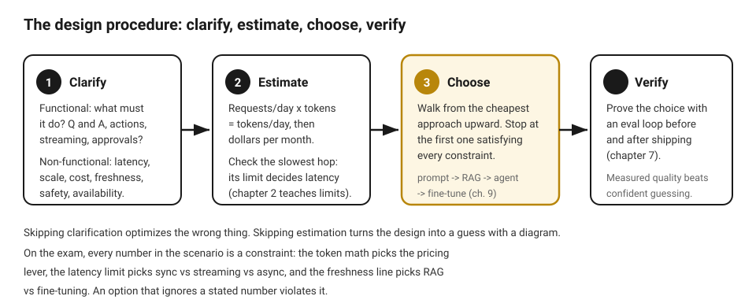
Every system design question on the exam is the same. A scenario gives you limits. The correct answer is the cheapest architecture. This architecture must meet all limits. Some people choose services too fast. For example, they say "this needs a Knowledge Base".
These people fail. Other people find the limits first. For example, they find "40,000 documents, updated monthly, citations required, answers under 3 seconds". These people choose correctly. Each limit removes options. Only one design remains.
There are two types of requirements. Functional requirements show what the system does. For example, it answers questions from company documents. It looks up live order status. It sends answers to a chat UI. It gets human approval before it gives refunds.
Non-functional requirements show how well the system does it. For example, latency is how fast each answer must arrive. Scale is requests per day and peak multiples. Cost is the monthly budget. Knowledge freshness is how often documents change. Safety shows who the users are.
It also shows what must never happen. Availability shows what happens when a region has an outage.
Clarify before you design. These questions are half the score in a real design discussion. The exam rewards the answer that finds the missing number. For example, how many requests per day? How fresh must the knowledge be? Does the app need streaming?
What is the cost budget? The scenario usually answers each question in one line. You must find all of them.
Then, estimate. Cost in GenAI is tokens. So, convert early with this equation:
tokens per day = requests per day × tokens per request
monthly bill = tokens per day × 30 days × price per token
Here: requests per day is the traffic volume. tokens per request is input tokens plus output tokens for one call. price per token is the model price. The price is usually for one million tokens.
Worked example. A support copilot has 100,000 requests each day. Each request has 1,500 input tokens and 300 output tokens. This is 100,000 × 1,800 tokens. This equals 180,000,000 tokens per day. 180M × 30 equals 5.4 billion tokens each month.
This number shows if prompt caching, batch inference, or a smaller model belongs in the design.
Latency estimation works the same way. Every hop has a limit. The slowest hop decides. Chapter 2 teaches the exact service limits. For example, API Gateway timeouts, Lambda caps, batch inference hours. You do not need the numbers now.
You need the habit of checking the slowest hop.
This rule organizes the whole volume: Start with the simplest approach. This approach must meet every limit. Then, stop. A plain prompt is better than RAG if no new knowledge is necessary. RAG is better than fine-tuning if documents change. Complexity costs money, latency, and failure modes.
So, use complexity only when a limit needs it. Chapter 9 turns this rule into three mechanical ladders. Every chapter between here and there teaches the steps.
Read the diagram: The procedure flows from left to right. Clarify splits the scenario into functional and non-functional requirements. Write down every number. Estimate converts requests to tokens to dollars. It checks each hop's latency limit. Choose starts with the cheapest approach.
It moves upward. It stops at the first approach that meets every limit. Verify proves the choice with an evaluation loop. This happens before and after shipping. See chapter 7.
A design that does not clarify optimizes the wrong thing. A design that does not estimate is a guess with a diagram.
Exam framing.
The scenario gives you numbers. For example, requests per day, document counts, latency limits. These are limits. They are not decoration. The correct answer always uses them. The token math chooses the pricing lever.
The latency limit chooses sync versus streaming versus async. The freshness line chooses RAG versus fine-tuning. An option that ignores a stated number violates it.
Next: Chapter 2 shows how to call the model. This is the first design decision. It shows four invocation patterns. It also shows the ladder that chooses between them.
2. Sync versus async invocation patterns
Why this chapter comes next. Chapter 1 gave you the design procedure. This procedure is: clarify, estimate, choose, verify. The first real decision is how your application calls the model. This chapter shows four invocation patterns. It also shows the ladder that chooses between them.
There are four ways to call a model. Each way has a different latency, payload, and cost. The exam tests the decision. It does not test the syntax.
2.1 The API matrix
Why this chapter comes next. The matrix lists the APIs. It shows what each API is for. The next section turns the list into a decision. It is a ladder that chooses the correct API from the scenario's hardest limit.
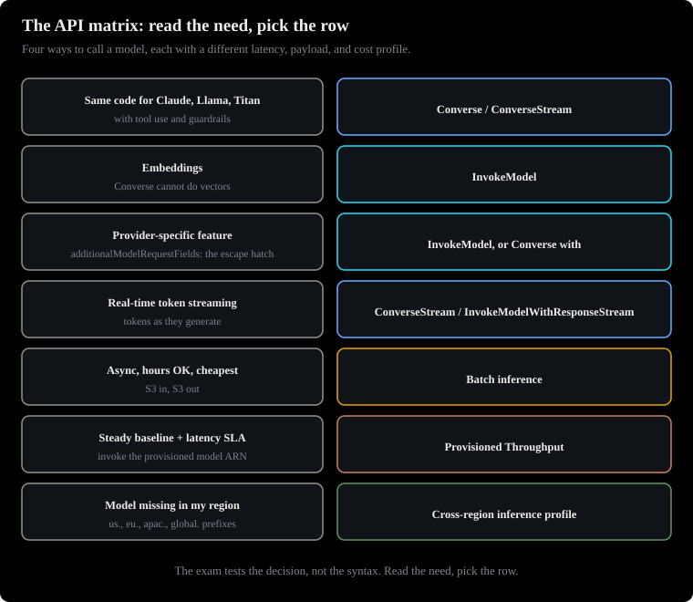
How to read this diagram
- Row one: Converse. One shape for all providers.
- Row two: InvokeModel. Raw provider body for special features.
- Row three: batch and PT. Async bulk and reserved capacity.
- Row four: inference profiles. They move traffic between regions.

- Converse and ConverseStream. This is the unified API. One request shape works for Claude, Llama, Titan, Nova, and other models. It supports tool use. (Chapter 4 covers agents.) It supports inline guardrails (
guardrailConfig). It supports prompt caching (cachePoint). It supports structured output (outputConfig). It supports inference parameters (maxTokens, temperature, topP). ConverseStream returns tokens as the system generates them. Use this API when you want provider portability. It does text generation only. It does not do embeddings. - InvokeModel and InvokeModelWithResponseStream. These APIs use provider-specific request bodies. You need these APIs for embeddings. (Embeddings are numeric vectors. They show text meaning. You use them for semantic search. Chapter 3 covers them fully.) You need these APIs for provider-specific features. Converse does not show these features. (
additionalModelRequestFieldsis the escape hatch inside Converse.) If you make the body wrong, you get aValidationException. For example, Claude needsanthropic_versionandmax_tokensin the InvokeModel body. - Batch inference. This method is asynchronous and the cheapest. You put prompts in S3. Bedrock processes them over hours. Results go to S3. This method is about 50 percent cheaper than on-demand. It has no interactivity. This is the exam's answer for "thousands of documents to summarize overnight, no user waiting."
- Provisioned Throughput (PT). This is reserved model capacity. You commit to it hourly. The terms are typically 1 to 6 months. It buys latency guarantees and throttling protection. It is for steady baseline traffic. It does not lower cost. You must invoke the provisioned model ARN. Do not invoke the base model id. The classic exam bug is buying PT. Then you still call
invoke_modelwith the base model id. Then you get throttled on the on-demand path. - Cross-region inference profiles. Invoke the profile id. (
us.,eu.,apac.,global.are prefixes.) Do not invoke the bare model id. This gives automatic failover when a model is not available in your region. This is availability routing. It is different from cost routing (prompt routers). It is different from reserved capacity (PT). There are three different mechanisms. There are three different exam answers.
Need API / pattern
---------------------------------- ----------------------------------------
Same code for Claude, Llama, Titan Converse / ConverseStream
with tool use and guardrails
Embeddings InvokeModel (Converse cannot do vectors)
Provider-specific feature InvokeModel, or Converse with
additionalModelRequestFields
Real-time token streaming ConverseStream /
InvokeModelWithResponseStream
Async, hours OK, cheapest Batch inference (S3 in, S3 out)
Steady baseline + latency SLA Provisioned Throughput, invoke the
provisioned model ARN
Model missing in my region Cross-region inference profile id
How to read this diagram
Read it as a lookup table. Read from top to bottom. Find the row where "Need" matches the scenario's hardest constraint. Read to the right for the answer. The exam writes scenarios where two rows look possible. The constraint stated most strongly is always the tiebreaker.
"Must stream tokens to the browser" is stronger than "wants the cheapest option." This is because streaming is a hard requirement. Cost is a preference.
Common misunderstanding.
"Converse and InvokeModel are interchangeable." This is not true. Embeddings need InvokeModel. Unified multi-provider code needs Converse. And "guardrails only work with Converse" is false. The standalone ApplyGuardrail API works with any model. This includes non-Bedrock models.
2.2 The decision ladder: latency, payload, use case
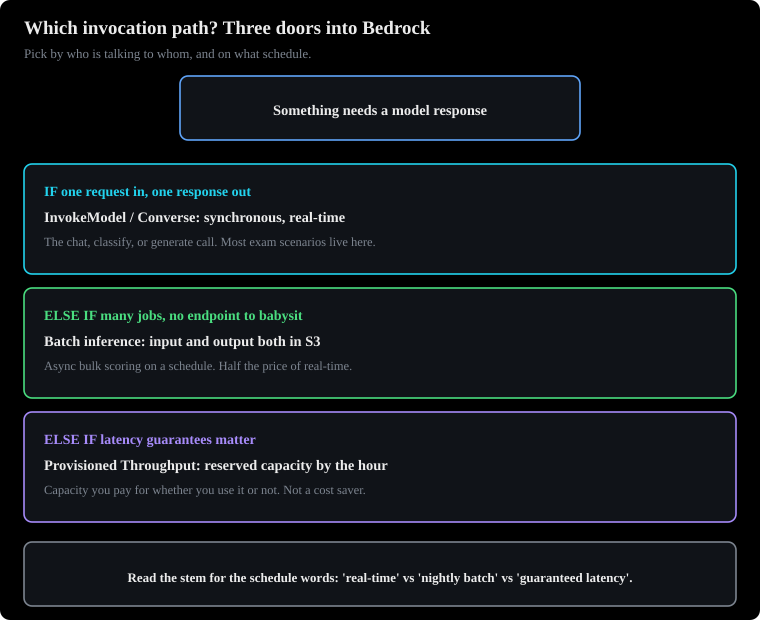
Why this chapter comes next. The ladder picks the invocation pattern. The pattern must then survive production. Every hop has a timeout. Every call can fail.
| Pattern | Latency | Payload limits | Cost profile | Use when |
|---|---|---|---|---|
| Sync Converse / InvokeModel | Seconds, one round trip | Request/response within API limits | On-demand per token | Interactive chat, single-shot Q and A, tool calls that finish fast. |
| Streaming (ConverseStream) | First token in well under one second typically | Long outputs are fine. API Gateway has its own payload and timeout limits. | Same as sync | Any user-facing generation: perceived latency drops even if total time is similar. |
| Async via queue (SQS + Lambda + Bedrock) | Minutes | Decoupled: no API Gateway timeout pressure | On-demand per token | Agent loops, multi-step work, anything slower than the front-door timeout. The Slack agent diagram in chapter 4 is this pattern. |
| Batch inference | Hours | Bulk S3 input | About 50 percent cheaper than on-demand | Nightly summarization, bulk classification, evaluation runs. No user waiting. |
| Provisioned Throughput | The system guarantees no throttling at the committed rate. | Same as sync | Commit hourly. The cost per token is lowest with high, steady use. | Expect a steady baseline traffic. It has a latency service level agreement. This is a hybrid system. Use Provisioned Throughput for baseline traffic. Use on-demand for traffic spikes. |
These are example numbers. A chat turn uses 8 seconds of model time. This fits sync Converse behind API Gateway. API Gateway has a 29-second integration timeout. A turn that can exceed 29 seconds must use streaming. Or it must use the async queue pattern.
An agent loop uses 3 minutes per task on average. It cannot run synchronously behind API Gateway. Put it in a queue. A nightly job summarizes 20,000 tickets. It has no latency limit. Batch inference cuts the bill by 50 percent.
2.3 Timeouts and retries
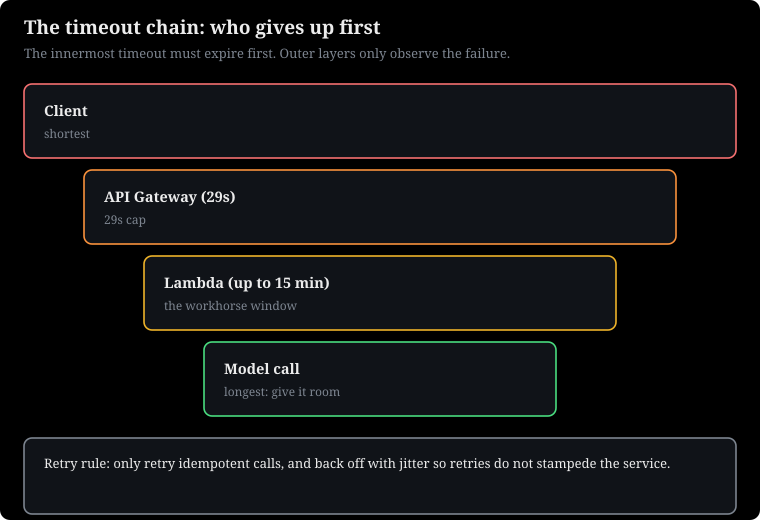
The timeout chain. Each hop has a limit. The smallest limit wins. API Gateway has a 29-second integration timeout. Lambda has a 15-minute maximum. The model's own limits constrain Bedrock model invocation.
Design each hop's timeout. Make it comfortably above the p99 of the hop below it. Or separate with a queue.
The retry policy.
- Back off with jitter. Use the SDK's exponential backoff with jitter. Do this for throttling (
ThrottlingException) and temporary 5xx errors. - Do not retry a bad request.
ValidationExceptionmeans your request body is wrong. Retrying will fail in the same way. - Use a fallback for hard failures. If the main model has errors, retry one time on a smaller model. Or give a cached response.
This graceful degradation is the resilience pattern. The exam rewards this pattern.
Circuit breaking. Agents call downstream tools. Wrap these calls in a Step Functions circuit breaker. Or use a Lambda-level breaker. After N failures in a row, stop calling for a cool-down period. This stops a bad downstream system.
It prevents burning model tokens on retries that will fail.
"2M requests per day baseline plus 10x Friday spikes with sub-3-second latency" means a hybrid solution. Use Provisioned Throughput for the baseline. Use on-demand via Lambda for the spikes. Use streaming for perceived latency. "Entirely SageMaker with GPU autoscaling" fails on cost. It also fails on cold starts.
"fixed EC2 for peak" fails on cost. The exam always punishes single-lever answers. These answers do not fit scenarios with many limits.
Trap, stated plainly.
Provisioned Throughput does not fix outputs that are not deterministic. If the same inputs give different answers, do this. Set temperature to 0. Use deterministic prompts. Use prompt versioning. Do not add more capacity.
PT fixes throttling and latency. It never fixes randomness.
Next: Chapter 3 fixes what the model answers from. It grounds the model in your documents with Knowledge Bases.
3. RAG on Bedrock: Knowledge Bases end to end
As you learned in D1, RAG grounds a model in your data. This guide turns that pattern into a full architecture.
Why this chapter comes next. Chapter 2 showed how to call the model. The problem it leaves open is what the model answers from. Its training data is fixed. It knows nothing about your company. This chapter fixes that with Knowledge Bases.
This is the exam's most important topic.
This is the exam's main focus. If the scenario says "private documents," or "must cite sources," or "answers grounded in company data," you build this.
3.1 What a Knowledge Base is
Why this chapter comes next. A Knowledge Base is the managed RAG service. Data sources feed it. Documents and their sync schedules live in data sources.
Amazon Bedrock Knowledge Bases (KB) is the managed RAG service. RAG means retrieval-augmented generation. You do not retrain a model on your documents. You get the correct passages when you ask a question. You give them to the model with the question. So the model answers from those passages.
The KB is the AWS-managed bundle. It does the ingestion, chunking, embedding, indexing, and retrieval for you.
It exists because foundation models are fixed in time. They know nothing about your company. Without RAG, you get three failures. You get hallucinated facts. These are wrong answers that sound confident. You get stale answers.
Training data is months old. You get no citations. There is no way to show which document an answer came from. Fine-tuning is the only other option. It is slower. It costs more.
It cannot cite sources. It becomes stale when a document changes.
Two pipelines run inside it. The exam tests that you know both.
- Ingestion (offline, on a sync schedule). Documents go into a data source. This is usually an S3 bucket. The KB parses the documents. It parses PDF, DOCX, TXT, CSV, HTML, and other types. The KB splits documents into chunks (see 3.3). It converts each chunk into an embedding vector. It uses the configured embeddings model (see 3.4). The KB writes the vectors, chunk text, and metadata into the vector store (see 3.5). You start this with a sync job. The sync job runs on a schedule or on demand.
- Retrieval (online, per user question). The system embeds the question. It uses the same embeddings model. The vector store returns the nearest chunks (top-k). A reranker can re-score them. The system puts the chunks into the model's prompt as context. The model answers. The
RetrieveAndGenerateAPI does all of this. It also does generation in one call. It returns source citations. TheRetrieveAPI gives you raw chunks. You do the generation yourself with Converse (see 3.7).
Key exam split:
RetrieveAndGenerate
= one call. Bedrock generates the answer. The response includes citations.
Retrieve
= You get chunks only. You control the prompt and the model call. Use Retrieve plus Converse if you need custom prompt control. Use it if you need inline guardrails. Use it if you need streaming.

How to read this diagram
- Left edge, outside the AWS boundary: There are four data source types. These are structured data (databases, CSV), streaming data (events), unstructured data (PDFs, docs), and multimedia (video, audio). This is the raw material stage. In the exam, the data source list maps directly to the ingestion tool. Multimedia points to Bedrock Data Automation or Transcribe before the KB.
- Center: Amazon S3. All data goes here first. S3 is the staging area. It is the KB's native data source. Versioning on this bucket gives you rollback of source documents.
- Bottom branch (numbered 2 then 3): This is the RAG path. S3 data flows into Amazon Bedrock Knowledge Bases. This chunks, embeds, and indexes data. Then it writes vectors into Amazon OpenSearch. This is the ingestion pipeline from the list above. It is a real AWS diagram.
- Top branch (numbers 4, 5, 6, 7): This is an agentic path. SQS goes to Lambda. Lambda goes to Bedrock Prompt Flow. Results go back to S3. This is how you add transformation or orchestration around the data. Note that it is separate from the KB branch. Prompt Flows orchestrate prompts. They do not replace the KB's chunking and indexing.
- Right branch (numbers 8, 9): S3 goes to Lambda. Lambda goes to Amazon Neptune. Neptune is the graph store. This is the GraphRAG pattern. Use it for questions about relationships. For example, "which supplier feeds which product line". The exam mentions Neptune for GraphRAG. It is never the default vector store.
Per-component meaning and failure modes
| Component | What it does here | What breaks if it fails |
|---|---|---|
| S3 staging bucket | It is a durable landing zone for source documents. | KB sync finds nothing new. Retrieval goes stale. Fix this with a sync schedule. Also use S3 event triggers. |
| Bedrock Knowledge Bases | It does parsing, chunking, embedding, and sync orchestration. | Bad chunking or a failed sync means the model answers from garbage. Or it answers from nothing. Check the sync job status first. |
| OpenSearch | It is a vector index for similarity search. | Retrieval is slow or irrelevant. Fix this with index tuning. Use hybrid search. Use reranking. |
| Neptune | It is a graph store for relationship queries. | This only matters for GraphRAG scenarios. It is not relevant to plain document Q and A. |
Scenario: A company has 50,000 policy PDFs. They update them quarterly. Support agents need answers with citations. The model must not hallucinate. The correct answer chains: S3 data source, scheduled sync, Knowledge Base, RetrieveAndGenerate for citations. Distractors: fine-tuning (cannot cite, goes stale), Kendra alone (enterprise search, no generation), one shared prompt telling the model the policies (no grounding).
3.2 Data sources and sync
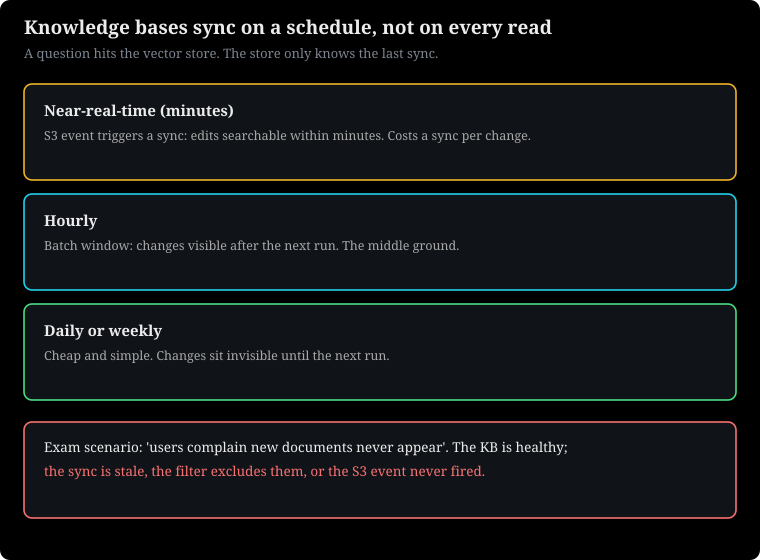
This chapter is next because: Documents come in on a schedule. The next step is to divide them. Chunking is the name for this step. Chunking is the most important retrieval control.
A data source is where the KB gets documents. Supported sources are: Amazon S3 (the native source), a web crawler (public or sitemap URLs), Confluence, SharePoint, and Salesforce. Each data source has its own chunking settings. Each data source has its own sync schedule.
Separate data sources are important. You set chunking for each data source when you create it. You cannot change chunking later. If you change chunking, you must create the data source again. So, documents that need different chunking go into different data sources. For example, put manuals in one data source with hierarchical chunking.
Put FAQs in another data source with fixed-size chunking. Sync schedules are also different. A product catalog changes every day. It gets a daily sync. Archived contracts get a one-time sync.
Sync runs on a schedule. The schedule can be hourly, daily, weekly, or custom. Or, you can run sync on demand. The exam may say "documents updated quarterly." The correct answer always includes an automated sync schedule. It never includes a one-time manual load. Incremental sync gets new and changed files.
Deleted files follow the sync's deletion policy.
Common misunderstanding.
"The KB reads my S3 bucket live at query time." This is not true. Retrieval searches the vector index. The vector index only knows what the last sync ingested. If answers are old after a document update, the sync did not run. This does not mean the model is broken. This is the first thing to check when "the KB does not know about the new policy."
3.3 Chunking strategy comparison
This chapter is next because: Chunks have a size. Now each chunk becomes a vector. This is the embeddings model choice.

A chunk is a part of a document. It is small enough to embed and retrieve as one unit. Chunking is the most important decision in a RAG system. It decides what the retriever can "see." If a chunk is too large, it includes text that is not relevant. This makes the match less good. If a chunk is too small, it loses the context needed to answer.
The KB changes each document into raw text. Then, it uses the strategy. Fixed-size splits on token count with a configurable overlap percentage. Overlap keeps sentences from being cut in half at boundaries. Hierarchical builds a tree. Small child chunks are for precise matching.
Each child chunk links to a larger parent chunk. The system injects the parent chunk as context. Semantic splits at meaning boundaries (topic shifts). This costs more compute at ingestion. You set the strategy for each data source when you create it.
| Strategy | How it splits | Best for | Cost and speed | When to pick it |
|---|---|---|---|---|
default |
About 300 tokens per chunk, AWS manages it | Prototypes, quick PoCs | Cheapest, fastest | You are testing the idea. You are not shipping it. This is never the answer for "production with structured docs." |
fixed_size |
You choose the token count, plus overlap percent | FAQs, short uniform pages, chat logs | Cheap, predictable | Documents are all about the same shape. This is the exam's safe answer for simple content. |
hierarchical |
Child chunks for matching, parent chunks for context | Manuals, legal documents, technical guides, any document with sections and tables | More storage (two levels indexed) | Structure is important. Tables split across chunks. Headings give meaning. This is the exam's preferred answer for structured documents. |
semantic |
Splits at meaning boundaries | Long narrative documents where topic shifts are important | This ingestion is the slowest. This ingestion is the most expensive. | Quality is the top priority. Ingestion cost is acceptable. This is not always the best choice. The exam will offer it as a distractor. This happens when a fixed-size chunk is good. |
none |
You chunk the data before you upload it. | You already have clean chunks from another pipeline. | You pay for the compute. | An upstream system already made chunks. This system can be Bedrock Data Automation. This system can be a custom parser. |
| custom via Lambda | Your code decides | Use exotic formats. Use per-document logic. | Most operational overhead | Use this only if no built-in strategy works. The exam penalizes custom code. This happens when a managed option works. |
This is an exam trap. The exam states it clearly. "Tables broken across chunks, answers miss the row context" means you need hierarchical chunking. It means you need advanced parsing. It does not mean you need a bigger generation model. "RAG returns confident but wrong answers and the chunks look relevant" is a retrieval-quality problem.
First, debug chunking. Then, debug embeddings. Debug the generation model last. Switching the model is the classic wrong answer. This happens when retrieval is broken.
3.4 Select an Embeddings Model
3.4 Select an Embeddings Model
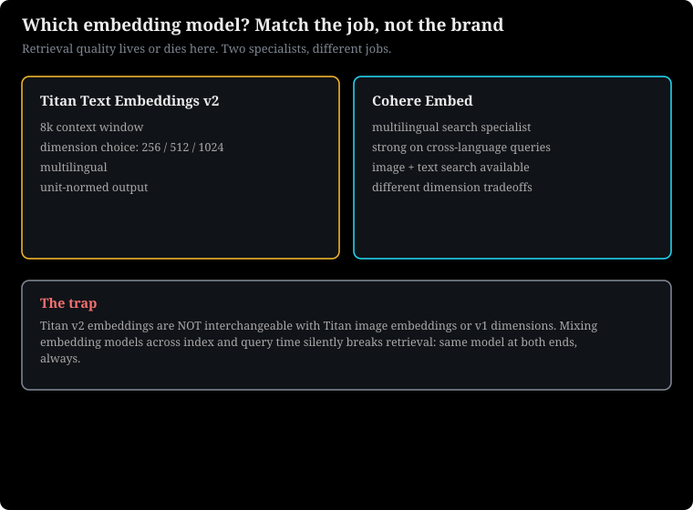
Why this chapter comes next. Vectors exist. The vectors need a home. The vector store is the home. Choose the vector store one time. Choose it when you make the KB.
These are the two exam-relevant choices:
The two choices are relevant to the exam.
- Amazon Titan Text Embeddings v2. This is the default option. This option is low cost. You can set the dimensions. The dimensions are 1024, 512, or 256. Smaller dimensions use less vector storage. Smaller dimensions make search faster. Smaller dimensions reduce accuracy a small amount. Use 1024 when quality is most important. Use 256 for very large data sets. Use 256 when storage and latency are most important.
- Cohere Embed. This is the multilingual choice. It has an
input_typeparameter. This parameter separates search queries from documents. This improves the match quality. Use it if the corpus or the users use many languages.
The query side embeds only the question. The question is small. This is why RAG is cheap to operate. The expensive part happens one time. It does not happen for each question. Dimension choice increases storage.
1024-dimension vectors use about 4 times the space of 256-dimension vectors.
Common misunderstanding.
"Bigger embeddings are always better." This is true up to a point. After that point, you pay for storage. You pay for latency. You get no measurable gain. "I can swap the embeddings model later" is false. You must re-ingest the data.
Changing the model means you must re-embed every chunk. This is because vectors from different models live in different spaces. You cannot compare them.
3.5 Vector store decision table
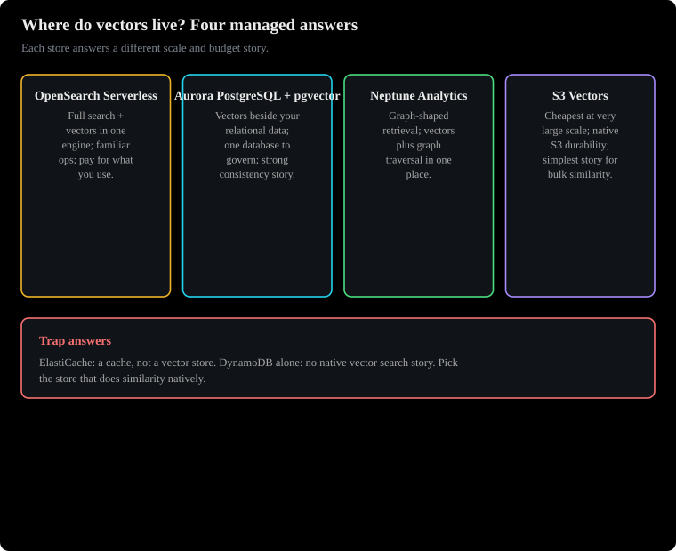
This chapter comes next for this reason. The store keeps the vectors. Now, consider the query path. Which chunks reach the model? In what order do they reach the model?
The vector store is the database. It holds the vectors. It runs nearest-neighbor search. The KB writes to it during ingestion. The KB queries it during retrieval. You choose it when you make the KB.
| Vector store | What it is | Strengths | Weaknesses | Pick it when |
|---|---|---|---|---|
| OpenSearch Serverless | Managed OpenSearch, vector collections | The system scales. AWS manages the system. The system has built-in hybrid search. | This option has the highest cost of the native options. | This is the default for production scale. This is the exam's standard answer for a large corpus, managed system, with low operations. |
| S3 Vectors | The system stores vectors in S3 at low cost. | Very cheap, simple | This option has a smaller scale. This option has fewer query features. | Use this option for cost-sensitive development, testing, or small corpora. The exam describes this as the budget option. |
| Aurora PostgreSQL with pgvector | This is a relational database. It has a vector extension. | It has one store for rows and vectors. It has SQL filters. | You operate a database. | You need relational queries and vector search together. For example, find orders from the last quarter about product X. This needs much metadata filtering. |
| Neptune | Graph database | Relationship traversal (GraphRAG) | This is not a general vector store. | Questions are about relationships between entities. This is never the default RAG answer. |
| Third-party (Pinecone, MongoDB, Redis) | These are external vector databases. They use connectors. | You have an existing investment. You need special features. | This needs cross-service operations. Data leaves AWS. | The team already uses one. Otherwise, the exam prefers native options. |
This is a trap the exam reuses.
DynamoDB as the vector store is wrong. DynamoDB holds metadata and session state, not vectors. ElastiCache as the vector store is wrong. It is ephemeral. Use it for caching, not for durable vectors. One shared KB with prompt-level instructions for multi-tenant data is wrong.
For example, "only answer for your hotel". The exam wants separate KBs with IAM-enforced isolation for each tenant.
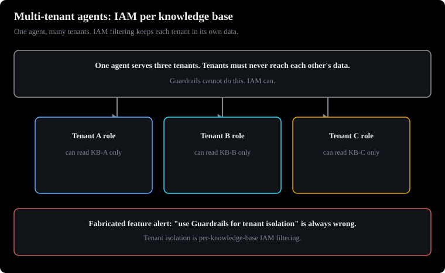
How to read this diagram
- Left: tenant A role. It reads only KB A.
- Right: tenant B role. It reads only KB B.
- Bottom: the exam trap. Guardrails filter content. They do not isolate tenants.
3.6 Retrieval configuration
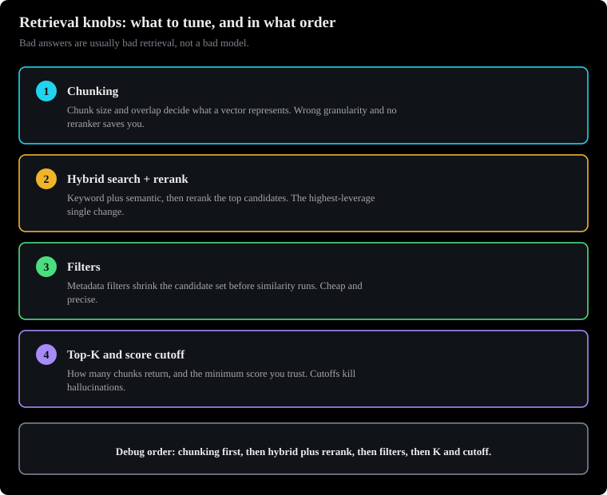
Why this chapter comes next. You configure retrieval here. The last step connects it to the model call. Guardrails are on the path.
Retrieval configuration decides which chunks reach the model. There are three controls: how many (top-k), which subset (metadata filters), and how good (hybrid search plus reranking).
- Top-k. This is the number of chunks that the system returns per query. A small k (3 to 5) is low cost and specific. A large k (20+) gives more context. But it uses more tokens. It can also give the model too much noise. Adjust this value. Start with 5. Increase it only if answers do not have information that is in the data.
- Metadata filters. Each chunk can have metadata. This includes the source file, department, date, and tenant ID. Filters limit retrieval to a subset before similarity ranking. For example, you can select only the 2026 policy documents. This also provides multi-tenant isolation at the data layer. It works with separate knowledge bases or IAM scoping.
- Hybrid search. Vector search finds meaning. Keyword search finds exact terms. These terms include product codes, names, and error strings. Hybrid search does both. It combines the results. Use it when queries have exact identifiers. Pure semantic search can change these identifiers.
- Reranking. A second model re-scores the top-k chunks. It checks for true relevance to the question. Vector similarity is not the same as relevance. This fixes the problem when retrieved chunks look related but the answer is wrong. Bedrock provides rerank models. Apply them after the first retrieval pass.
The debug order for bad RAG answers (memorize this).
- Check retrieval. Do the correct chunks return? If not, fix chunking, embeddings, or filters.
- Check relevance. Chunks look similar but are not truly relevant. Add reranking or hybrid search.
- Check generation. The model does not use the given context. Make grounding stronger in the prompt. Or add a contextual grounding check.
Never start by changing the generation model.
3.7 Converse integration and Guardrails placement

Use the Retrieve API. Do not use RetrieveAndGenerate. You get chunks back. You build the final prompt yourself. Then, call the model through the Converse API. This is Bedrock's unified request format across providers.
This is the manual RAG loop. Guardrails fit in here.
User question
|
v
[1] Retrieve API --> top-k chunks + citations + scores
|
v
[2] Build prompt: system instructions + chunks as context + question
|
v
[3] Converse API with guardrailConfig (identifier + version)
| Guardrails screen the INPUT here (prompt attack, PII, denied topics)
v
[4] Model generates answer from the provided context
|
v
[5] Guardrails screen the OUTPUT (toxicity, PII leak, grounding check)
|
v
Answer + source citations returned to the user
How to read this diagram
- Step 1, Retrieve: This is the only Bedrock call that uses the vector store. It returns chunks. Each chunk has a source URI and a relevance score. If the scores are low for all chunks, stop here. The problem is retrieval. No prompt trick later will fix it.
- Step 2, prompt assembly: Your code controls this. Put the chunks in a clear context block. Add the user question. Add a grounding instruction. For example, "answer only from the context. Say you do not know if the answer is not there." This instruction is the cheapest way to prevent hallucination.
- Step 3, Converse with guardrailConfig: One API call carries the model ID, messages, inference config, and the guardrail identifier plus version. Guardrails check the input before the model sees it. This is where the system blocks prompt-injection attempts and PII in the question.
- Step 4, generation: The model answers from the context you gave. You used Retrieve. You did not use RetrieveAndGenerate. So, you can also stream the answer with ConverseStream. See chapter 2.
- Step 5, output screening: Guardrails check the answer before the user sees it. In RAG, the contextual grounding check is here. It checks that the retrieved chunks support the answer. This directly fights hallucination.
What breaks if a component fails
- Retrieve returns bad data. Check the chunking strategy. Check the sync freshness. See sections 3.2 and 3.3.
- Guardrail blocks correct questions. The denied-topic definitions are too broad. Or a content-filter threshold is too strict. Adjust the policy. Do not remove the guardrail.
- The answer has no citations. You used Retrieve. But you did not pass the source URIs to the response. RetrieveAndGenerate does this automatically.
Guardrails placement rule.
Guardrails apply to inputs, outputs, or both. You configure this per call. In RAG, you almost always want both. Input screening stops injection and PII. Output screening plus the contextual grounding check stops hallucinations and leaks. The standalone ApplyGuardrail API applies the same policies to any text.
This includes text from non-Bedrock models.
The application must stream answers. It must apply custom prompt templates. It must enforce safety policies. This means Retrieve plus Converse with inline guardrailConfig. The simplest grounded Question and Answer with citations means RetrieveAndGenerate. The exam tests your knowledge of API responsibilities.
Next: Chapter 4 adds action. The agent reasoning loop calls APIs. It runs multi-step tasks on top of RAG grounding.
4. Bedrock Agents with action groups
Why this chapter comes next. RAG answers questions from documents. Action is the next unsolved problem. This includes looking up live order statuses. It includes issuing refunds. It includes calling your APIs.
This chapter adds the agent reasoning loop. The loop does things. The Knowledge Base from chapter 3 grounds the loop.
RAG answers questions. Agents do things. They call APIs. They query databases. They run multi-step tasks. They remember the session.
The exam tests this anatomy.
4.1 Agent anatomy and the orchestration loop
Why this chapter comes next. The reasoning loop is the engine. Action groups are its hands. They are the tools the agent can call.
A Bedrock Agent is a managed reasoning loop. It uses a foundation model. Give it an instruction. For example, "you are a travel assistant that can book and refund flights." Give it a foundation model to reason with. Give it an IAM role. The role scopes what it can touch.
The agent then runs a ReAct loop. It reasons about the user request. It decides which tool to call. It calls the tool. It reads the result. It repeats until it can answer.
Tools come from action groups. Knowledge comes from attached knowledge bases. Safety comes from attached guardrails.
This closes a gap. A bare model call leaves this gap open. A model alone cannot look up a live order status. It cannot cancel a booking. Bedrock runs the think-act-observe cycle. It keeps session state.
It returns a final answer. You do not write the orchestration loop yourself.
The orchestration loop, step by step.
- Invoke. Your app calls
invoke_agent. It uses the bedrock-agent-runtime endpoint. It uses anagentId. It uses anagentAliasId. This is the prepared, versioned deployment. Never use DRAFT in production. It uses asessionId. This ties turns together. The agent keeps short-term memory for the session. Optionally, useenableTraceto see the reasoning. - Reason. The model reads the instruction. It reads the conversation history. It reads the action-group API schemas. It reads any KB context. Then it decides. It can answer directly. It can retrieve from the KB. Or it can call a tool.
- Act. If it calls a tool, Bedrock invokes the action group's executor. This is usually a Lambda function. It uses the function name. It uses parameters parsed from the model's output.
- Observe. The tool result returns to the model. The model reasons again. This loop repeats. It repeats until the model produces a final answer. Or it repeats until it hits a stopping condition.
- Respond. The final answer streams back. Trace events stream back if you enabled them.
Lifecycle terms the exam tests. You must run prepare-agent after any configuration change. This compiles the instruction. It compiles the schemas. It compiles the KB attachments. This makes a working agent.
The agent runs the old version until you do this. The classic "agent ignores my new action group" bug is a missing prepare-agent. Aliases point at prepared versions. Production traffic uses an alias. It does not use the DRAFT.
Common misunderstanding.
"The agent remembers everything forever." Agent session memory is short-term. The idle session TTL is about minutes. Community notes document it around 600 seconds. Verify this at build time. For memory across days or weeks, store conversation state in DynamoDB yourself. See chapter 5.
Or use a long-term memory service.

How to read this diagram
- Steps 1 and 2, left edge: Users talk in Slack. Slack posts events to an API Gateway endpoint. API Gateway is the stable front door. It gives you throttling. It gives you authentication. It gives you a fixed URL. Any chat UI fits this slot. This includes web, mobile, and Slack.
- Steps 3 and 4: A Lambda function verifies the message signature. It uses a signing secret from Secrets Manager. This is webhook hygiene. Never trust an inbound event. Verify it came from the claimed sender. Secrets Manager holds the secret. The code does not hold the secret.
- Steps 5, 6, 7, 8: A second Lambda drops the event onto SQS. It immediately replies to Slack. The queue decouples the chat front end. It decouples it from the slow agent loop. A third Lambda drains the queue. It calls the agent. This is the async pattern from chapter 2. It applies to agents. The user never waits on a 15-minute Lambda.
- Step 9: The integration Lambda calls
invoke_agent. It uses a session ID. Then it posts the result back to Slack in step 10. - Right side, box A: Amazon Bedrock Agents use an Action Group. A Lambda function is the executor for the Action Group. The Lambda function connects through a resource-based access policy. This is the tool boundary. The agent can only do what this Lambda function does. The IAM role of the Lambda function limits what the Lambda function can touch. Least privilege is here.
Meaning and failure modes for each component
| Component | What it does here | What breaks if it fails |
|---|---|---|
| API Gateway | Front door, throttling, request validation | The system rejects or throttles Slack events. The system never invokes the agent. |
| Verification Lambda function + Secrets Manager | It proves the event is from Slack. | If you skip verification, forged events can start the agent. Never remove this layer. |
| SQS queue | It separates chat speed from agent speed. | Without it, slow agent turns make the webhook time out. The user sees errors. |
| Agent + Action Group + Lambda function | Reasoning loop plus the actual tool | The agent ignores the tool. Check that you ran `prepare-agent` after the schema change. Check that the resource-based policy lets the agent invoke the Lambda function. |
4.2 Action group and Lambda function contract design
Why this chapter is next. The system defines contracts. Here is the loop in action. One message has three jobs. The system traces each job turn by turn.

An action group is a named set of tools. The agent can call these tools. One executor supports the action group. There are two ways to define the tools:
- OpenAPI schema. You describe a REST API. You describe paths, methods, parameters, request shapes, and response shapes. Use it when the tool is already an HTTP service.
- Function schema. You define simple named functions directly. You define parameters directly. Use it for small tools. Writing an OpenAPI file is too much work for these tools.
The executor is usually a Lambda function. Bedrock calls it with a structured event. The event has the action group name, the function (API path or function name), and the parameters that the model extracted. Your Lambda function runs the logic. It returns a structured result. This input/output contract is the whole integration.
The model only sees the schema. It never sees your code.
Design the contract well. Keep functions small and for one purpose. For example, use "getOrderStatus" not "doOrderStuff". Name parameters exactly as the business names them. Return small JSON. Every token that the tool returns goes back into the model's context.
So, long tool output uses too much money and context window. Validate inputs in the Lambda function. The model will sometimes invent a parameter value. Your code is the last defense.
Model's view (the schema) Your code (the executor)
--------------------------- ------------------------
Action group: "orders-api"
function: getOrderStatus
param: orderId (string, required)
param: includeItems (boolean)
function: cancelOrder
param: orderId (string, required)
param: reason (string)
Bedrock --invoke--> Lambda event: Lambda --returns--> {
{ actionGroup, function, "statusCode": 200,
parameters: {orderId: "A-123"} } "body": {"status": "shipped",
} "eta": "2026-10-02"}
}
How to read this diagram
- Left column: The model knows about your tools. It does not see code. It does not see databases. It does not see credentials. If the schema does not have a capability, the model cannot use it. If a parameter is not clear, the model will guess.
- Middle arrow: Bedrock translates the model tool call. Bedrock makes a Lambda event. The event shows which function to run. The event shows the parsed parameters. Your Lambda dispatches on the function name.
- Right column: This shows the return data. Keep the data small and structured. The response goes back into the model's context. A 50 KB data dump uses tokens for each reasoning step.
Exam trap.
The resource-based policy on the Lambda must let the Bedrock agent invoke it. "Agent was working, then stopped calling the tool after a redeploy" often means the policy or the IAM role changed. It does not mean the model changed. Also: the exam makes a difference between action groups (tools for one agent) and the multi-agent supervisor pattern (agents work together). Section 2.7 covers this. Do not describe agent-to-agent talk as action groups.
4.3 Multi-step task decomposition: a traced example
Why this chapter is next. One agent does three jobs. Now attach the other two pieces. Attach the KB for grounding. Attach Guardrails for safety.
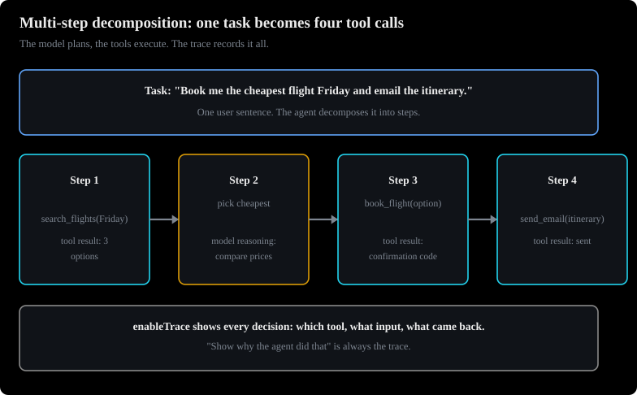
How to read this diagram
- Top: the user request.
- Middle: the agent splits it into steps. Each step calls a tool.
- Bottom: the trace. X-Ray shows each step and its time.
Scenario. A customer writes: "My order A-123 arrived damaged. I want a refund. I want to know the return shipping label status." This is one message. It has three jobs. Look up the order.
Issue a refund. Check the label. Here is the loop. It shows each turn.
Turn 1: user message arrives via invoke_agent (sessionId: sess-42)
Agent thinks: "I need order facts first. The KB has the refund policy;
the orders-api action group has live data."
-> KB retrieve: "damaged item refund policy"
returns: "Damaged items: full refund, no restocking fee."
-> action: getOrderStatus(orderId="A-123")
returns: {status: "delivered", total: 189.00}
Agent thinks: "Order exists and was delivered. Policy allows full refund.
Refund is a sensitive action: I should confirm with the user."
-> user: "I can refund $189.00 for order A-123. Confirm?"
Turn 2: user: "Yes, confirm."
Agent thinks: "Confirmed. Issue refund, then check label."
-> action: issueRefund(orderId="A-123", amount=189.00, reason="damaged")
returns: {refundId: "R-991", status: "processing"}
-> action: getReturnLabel(orderId="A-123")
returns: {labelStatus: "emailed", tracking: "1Z-884"}
Agent answers: "Refund R-991 of $189.00 is processing. Your return label
was emailed; tracking 1Z-884." (guardrails screen the output)
How to read this trace
- Decomposition: The agent split one message into three sub-tasks. The agent ordered the sub-tasks by dependency. Facts came before actions. No one wrote workflow code. The instruction and the tool schemas provided the order.
- Grounding: The refund policy came from the KB. The order facts came from the tool. The model did not create the policy. This is the agent plus KB combination. The exam calls this the standard production pattern.
- The confirmation gate: The agent stopped before the money movement. In production, enforce this with an approval flow (section 4.5). Do not hope the model asks.
- Session continuity: Turn 2 works. The sessionId moves the order context forward. A new sessionId will start again.
4.4 Agent plus Knowledge Base plus Guardrails: the combined architecture
Why this chapter comes next. The trinity is complete. A human must approve irreversible actions. Approval flows are necessary.
The exam's "holy trinity" is: the agent reasons and acts. The KB grounds it in documents. Guardrails keep it safe. All three attach to the same agent.
+-------------------------+
| Amazon Bedrock Agent |
| instruction + FM + |
| IAM role |
+------+------+-----+----+
| | |
+----------------+ | +----------------+
| | |
[Action groups] [Knowledge bases] [Guardrails]
Lambda executors S3 docs, chunked, input + output
via OpenAPI or embedded, indexed screening, PII
function schema (chapter 3) filters, grounding
| | |
Live systems: Policies, manuals, Blocks injection,
orders, CRM, product docs toxicity, leaks
payments
Tracing: enableTrace on invoke_agent
Deploy: prepare-agent, then alias; production uses the alias
How to read this diagram
- Center box: This is the agent. The IAM role on the agent is the security boundary. The IAM role decides which KBs the agent can query. The IAM role decides which action-group Lambdas the agent can invoke. Limit the IAM role to only these resources.
- Left branch: Action groups reach live systems. These groups are the only path for the agent to change the world. Every write action here must have an approval gate (2.5).
- Middle branch: Knowledge bases give documents. The agent asks the knowledge bases questions. The agent uses the same retrieval system as chapter 3. Old knowledge base data means old agent answers. Use the same debug order.
- Right branch: Guardrails screen user input. Guardrails screen agent final output. Guardrails screen prompt injection. Guardrails screen PII. Guardrails screen denied topics. Guardrails screen toxicity. Guardrails screen PII leak. Guardrails screen grounding. Guardrails do not screen intermediate tool calls. Validate tool inputs in your Lambda.
- Bottom row: Operations. Tracing shows the reasoning path for debugging. Prepare-agent plus alias is the deployment discipline. Production never points at DRAFT.
4.5 Approval flows for sensitive actions
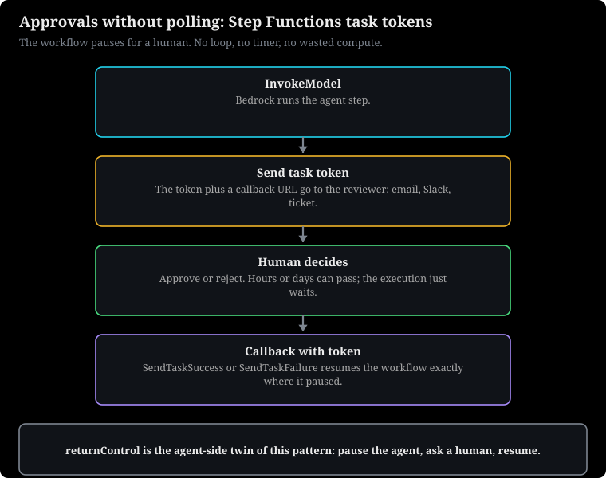
Why this chapter is next. Approvals protect money actions. If the agent does wrong, tracing shows you why.
A human must approve actions before the agent does them. This includes refunds over a limit, production changes, and external emails. This uses AWS Step Functions with a task token. The workflow stops. It tells a human by email, Slack, or ticket. It starts again only after approval.
The agent's tool call starts the workflow. It does not do the action directly.
Use Step Functions, not Lambda. Lambda stops after 15 minutes. A human approval can take hours. Step Functions can wait days for a task token. It gives you timeouts, retries, and a record of actions. This is why the exam does not accept Lambda for long tasks.
Agent calls action: requestRefund(orderId, amount)
|
v
Lambda (action-group executor) --starts--> Step Functions execution
| |
|<-- returns "pending approval" +-- Task token: wait for human
| to the agent +-- Notify approver (SNS/Slack)
Agent tells user: |
"Refund requested, awaiting approval." +-- Approved? issue refund via API
+-- Rejected? record reason
+-- Timeout (24h)? escalate
"Specialist agents must work together. They must use tools. They must remember for weeks. They must get human approval for actions over $100k." The correct answer has four parts. It uses a multi-agent framework for control. It uses MCP or action groups for tools.
It uses DynamoDB for memory over weeks. It uses Step Functions for approval. Wrong answers are: one prompt (it does not grow), Lex (it is for talking, not for agent control), Lambda alone for approval (it stops after 15 minutes).
4.6 Tracing and debugging
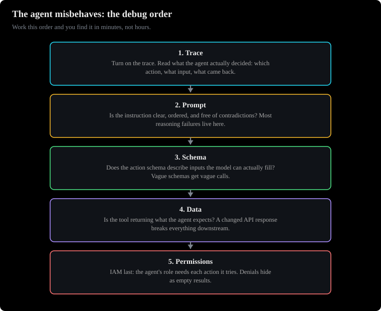
Why this chapter is next. You can debug one agent. Some problems need many agents. This chapter shows multi-agent and framework options.
Use enableTrace on invoke_agent. Bedrock gives the reasoning trace. This trace shows the model's thoughts. It shows which KB queries it ran. It shows which tools it called and with what data. It shows what each tool returned.
This is like a stack trace for an agent.
The debug order for agents.
- Agent ignores a new or changed action group: Did you run prepare-agent again? Does the alias for production point to the prepared version? This is the most common agent error on the exam.
- Agent calls the tool with wrong parameters: The schema is not clear. Change parameter names. Add descriptions. Make required fields truly required.
- Agent loops or never finishes: Add stop conditions. Set a maximum number of tries. Add a Step Functions timeout for the whole task. Give instructions that say when to stop and ask the user.
- Agent answers from old documents: The KB sync did not run. Use the same fix as in chapter 3.
- Access denied on tool call: The Lambda policy or the agent's IAM role does not permit the call.
For production monitoring, X-Ray traces the calls across Lambda, Bedrock, and other services. CloudWatch Logs Insights lets you search prompt and response content for common errors.
4.7 Multi-agent and framework options
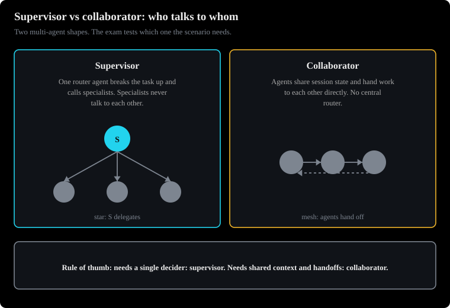
Multi-agent means several specialist agents work together under a supervisor. Bedrock Agents has a built-in supervisor/collaborator system. The supervisor agent breaks down the task. It gives parts to collaborator agents. You must prepare and alias these agents. Conversation history can pass between them.
This is the managed way.
The code-first way the exam names. Strands Agents and AWS Agent Squad are open-source tools. Use them to build multi-agent systems with code. MCP (Model Context Protocol) is the standard for agent-to-tool talk. Run MCP servers on Lambda for small tools. Run them on ECS for complex tools.
AgentCore is for moving to different frameworks. Runtime hosts agents from any framework. Gateway gives access to tools with credential management. Memory stores short and long-term agent context. It also provides Identity and Observability.
Common misunderstanding.
Do not describe inter-agent talk as action groups in the supervisor's instructions. The exam and the service use the built-in supervisor/collaborator system. Action groups connect an agent to tools. They do not connect agents to agents.
Any situation with "specialist agents for tax, investment, and estate planning must work together" points to the supervisor/collaborator system. It also points to Strands plus Agent Squad. It never points to one large agent with thirty action groups. The exam rewards clear separation of tasks.
Next: Chapter 5 puts together invocation, RAG, and agents. This makes the standard serverless chatbot system.
5. Chatbot and copilot reference architecture
Why this chapter is next. You now have invocation patterns, RAG, and agents as parts. This chapter puts them into one standard system. This is the serverless chatbot with memory, streaming, caching, and authentication. Half of the scenario questions are types of this system.

This is the standard serverless chatbot. It uses API Gateway, Lambda, and Bedrock. It has memory, streaming, caching, and authentication. Remember this design. Many exam questions are about this design.
5.1 The reference architecture
This chapter is next because: The basic design is complete. Now, we add memory, streaming, caching, and authentication.
User (web / mobile)
| HTTPS
v
+----------------+ Cognito / IAM authorizer
| API Gateway |-----------------------------+
+----------------+ |
| throttling, request validation v
v +-----------+
+-----------+ +------------------+ | Cognito |
| Lambda |-->| AppConfig | +-----------+
| (router) | | (model id, |
+-----+-----+ | flags, no |
| | redeploy) |
+-->+-----+-----+ |
| DynamoDB | session memory, TTL
| (sessions, | semantic cache
| cache) |
+-----+-----+
|
+---------+---------+
| Converse / | guardrailConfig inline
| ConverseStream | cachePoint for prompt caching
+---------+---------+
|
Bedrock models (Converse) / KB Retrieve / Agents
Observability sidecar: CloudWatch metrics + Logs + X-Ray traces
Audit sidecar: CloudTrail (who called what) + model invocation logs
How to read this diagram
- Top, the front door: API Gateway ends HTTPS. It limits requests per client. It checks requests. The authorizer runs before any Lambda code. It uses Cognito for users. It uses IAM for service-to-service calls. Unauthenticated traffic does not cost you money.
- The router Lambda: This Lambda is small. It loads the session from DynamoDB. It builds the prompt. The prompt includes the system prompt, history, and retrieved context. It selects the model ID from AppConfig. It calls Bedrock. Small size is important. Lambda charges by duration. Heavy work belongs in Bedrock or other services.
- AppConfig: The model ID and feature flags are here. This is runtime configuration. Changing models is a configuration change. It is not a deployment. This is the exam answer for "change models without code changes". Use AppConfig, Lambda, and API Gateway.
- DynamoDB: It has two jobs. Session memory stores conversation history per user. A TTL makes old sessions expire automatically. Semantic cache stores past questions and answers. It uses embedding similarity or a hash.
- Bedrock: Use Converse for generation with guardrails. Use prompt caching on the static prefix. Use Retrieve for the RAG path. Use invoke_agent if the chatbot needs tools.
- Sidecars: CloudWatch gives metrics. These include token counts, throttles, and latency. Logs Insights helps with prompt forensics. X-Ray traces the Lambda to Bedrock hop. CloudTrail provides an audit trail. It shows who called what. Model invocation logs show request and response forensics.
What breaks if a component fails
- API Gateway throttling is wrong. Valid users get 429 errors during peak times. Or, no throttling lets a client use all the token budget.
- Router Lambda is too big. Duration and cost increase. Move retrieval and assembly to parallel calls or a separate layer.
- The design has no DynamoDB session. The bot loses context during conversation. Always read and write the session atomically per turn.
- Model ID is hardcoded in the Lambda. Every model change needs a deployment. Move it to AppConfig.
5.2 Session memory options
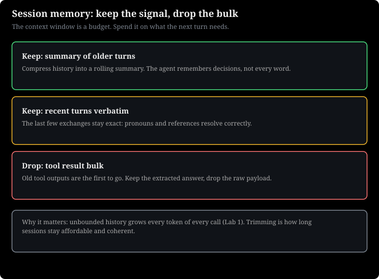
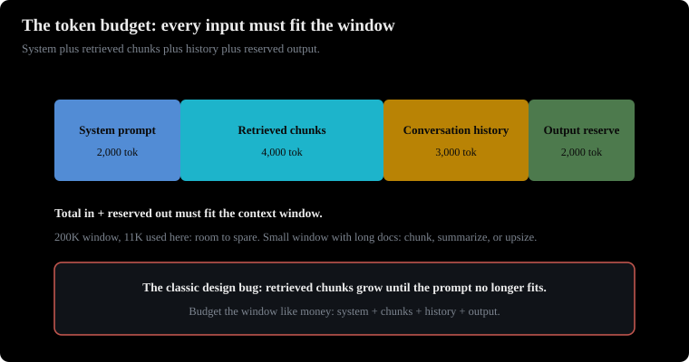
How to read this diagram
- Four blocks stack inside the window: system prompt, chunks, history, output reserve.
- If the stack is too tall, something must shrink.
- Bottom: unbounded history is an unbounded bill.
This chapter is next because: Sessions stay. The next problem is perceived latency. This means streaming tokens to the client.
Session memory is the conversation history. The model needs it to stay coherent. Someone must store it. Load it per turn. Trim it when it gets too big.
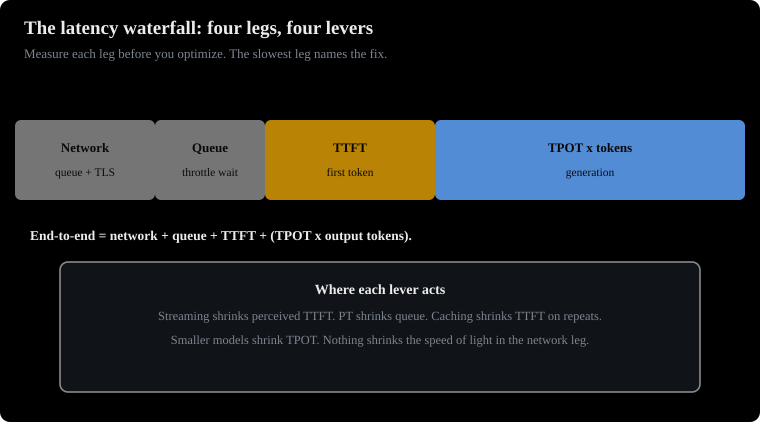
How to read this diagram
- Left to right: network time, queue time, time to first token, time per token.
- Streaming shortens the perceived part, not the total.
- Bottom: pick the lever that matches the slow leg.
| Option | Verdict | Why |
|---|---|---|
| DynamoDB | The answer | Reads are in single-digit milliseconds. Old sessions expire with TTL. Access is fine-grained per user. This is the exam's standard session store. |
| ElastiCache (Redis) | Caching only | It is fast but temporary. Data loss on failover is acceptable for a cache. It is not acceptable for conversation state you must keep. |
| S3 | Wrong | Latency and access patterns are wrong for per-turn reads and writes. S3 is for documents and logs. It is not for sessions. |
| Agent's built-in session | Short-term only | It works well within one agent session. This is for minutes-scale TTL. It does not work for days. Store it in DynamoDB for longer times. |
Trimming strategy. Keep the last N turns. Write a summary of older turns. Store the summary. This limits the token cost per turn. It keeps long-context coherence.
A low-cost model call makes the summary.
5.3 Send data to the client
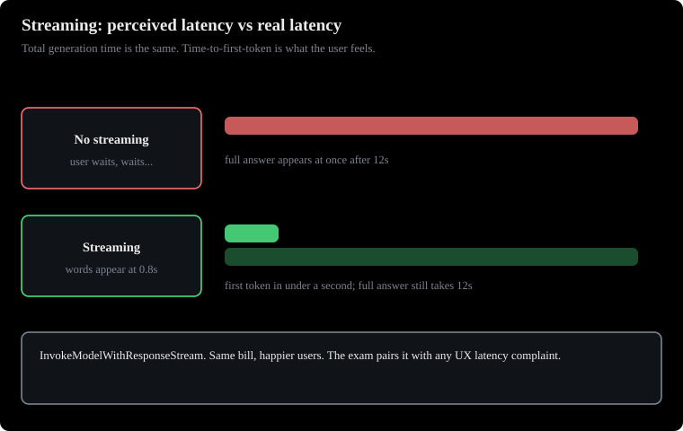
Why this chapter is next. Streaming makes latency seem lower. Caching stops model calls when inputs are the same.
Users see latency as the time to the first token. They do not see it as the time to the last token. Streaming makes perceived latency much lower. It does not change quality.
The Lambda calls ConverseStream. Bedrock sends tokens as server-sent events. The Lambda sends them to the client. There are two client patterns. Use API Gateway with chunked transfer encoding. This is simple.
It has a 29-second integration timeout limit. Or use WebSockets or direct SSE for long streams. These streams last longer than the timeout. For very long generations, use the async queue pattern from chapter 2. Send progress updates over the socket while the job runs.
Common misunderstanding.
"Streaming makes generation faster." This does not change the total generation time. It changes when the user sees the first word. The exam tests this difference. A scenario needs lower perceived latency. It does not need a quality change.
5.4 Caching layers
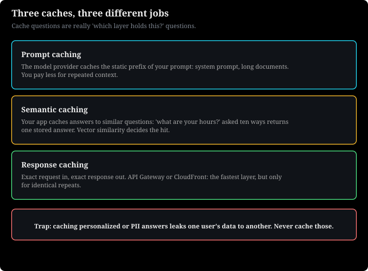
Why this chapter is next. Caching reduces the bill. The last layer is about access. It is about how models change without redeploys. This means auth and model switching.
- Prompt caching. Use this for repeated large static prefixes. This includes system prompts, few-shot examples, and long documents. Attach these to every call. Set a
cachePointin the Converse request. Use this on supported models. Cached input tokens cost less. Constraints apply. Minimum token thresholds apply per model. The TTL is short. It is about 5 minutes by default. It is up to one hour on supported models. So, it helps high-frequency repeated prefixes. It does not help occasional prefixes. - Semantic cache. Use this for repeated similar questions. For example, "what is the refund policy" asked 10,000 ways. Store question embeddings and answers in DynamoDB or ElastiCache. When a new question comes, check similarity. Do this before calling the model. The hit rate is high only when queries repeat. The exam rejects semantic caching for highly personalized queries.
- Deterministic request hashing. Use this for exactly repeated requests. These have the same prompt and parameters. Hash the request. Cache the response. This is the cheapest cache. It has zero model cost on hits.
5.5 Auth and model switching
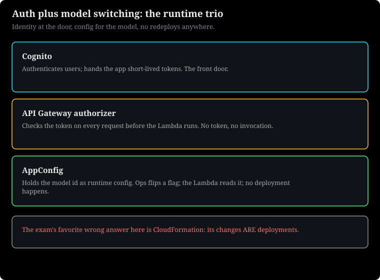
Auth. Use Cognito user pools for end users. This is for sign-up, sign-in, and groups for tiered access. Use IAM roles for service-to-service calls. The authorizer on API Gateway enforces this. It does this before Lambda runs.
For enterprise scenarios, IAM Identity Center permission sets give per-team access to models and KBs.
Model switching without redeploys. Use the three parts from the blueprint. Lambda holds the routing logic. API Gateway gives the stable endpoint and throttling. AppConfig holds the model identifiers and feature flags. This is runtime config.
Operations changes a flag. The Lambda reads it on the next invocation. CloudFormation is a distractor here. Its changes are deployments. This breaks "no code changes." EventBridge is the other distractor. It routes events.
It does not store configuration.
"Operations must switch between three models without code deployments." This is a select-all-that-apply question. It has exactly three correct answers. These are AppConfig, API Gateway, Lambda. Every other combination breaks one constraint. Remember these three.
Trap, stated plainly.
There are two timeout problems. One puts a slow agent loop behind API Gateway's 29-second integration timeout. Use the async queue pattern instead. The other "fixes" slow responses by raising timeouts. Stream the responses instead. Timeouts are safety limits.
They are not performance tools.
Next: Chapter 6 gives the price of the design. It covers token math and the controls for cost, latency, and quality.
6. Cost, latency, and quality tradeoffs
Why this chapter is next. The design fixes the architecture. The next question is about its cost. It is also about how fast it answers. This chapter changes the design into token math. It shows the independent controls for cost, latency, and quality.
Every scenario question is secretly this chapter. It has three limits and one budget. Learn the controls and the math. Then, the "most correct answer" becomes easy.
6.1 The five cost controls
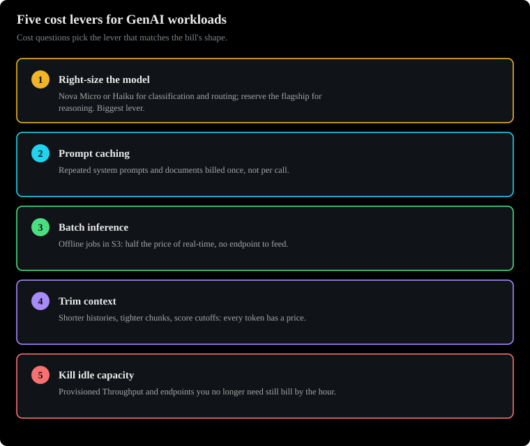
Why this chapter is next. There are five controls. Each control changes a different part of the bill. Now, see the math. It shows how much each control changes the bill.
There are five independent ways to change the bill. Each way changes a different part of the cost equation. This includes tokens in, tokens out, requests, and capacity.
| Lever | What it attacks | How it works | When it wins | Watch out |
|---|---|---|---|---|
| On-demand (baseline) | You pay for each token. | This is the default price. You do not make a commitment. | The traffic is spiky. The traffic is experimental. The traffic is unpredictable. | This is the most expensive price per token at a steady high volume. |
| Prompt caching | Repeated input tokens | Use cachePoint on the static prefix. You pay less for cached tokens. |
You use the same long system prompt or document on most calls. | You need minimum token thresholds. The TTL is short (about 5 minutes default). This is not useful if every prompt is unique. |
| Batch inference | You pay per token for deferred work. | The system takes S3 input. The system gives S3 output. The system processes data over hours. | This is non-interactive bulk work. Use this for nightly jobs. Use this for evaluation runs. | This is about 50 percent cheaper. But, there are hours of latency. Never use this for interactive traffic. |
| Provisioned Throughput | There is a risk of throttling. There is latency variance. | You commit hourly for reserved model units. The terms are 1 to 6 months. | This gives a predictable steady baseline. This has a latency SLA. | This does not save cost for spiky traffic. You pay for idle capacity. You must invoke the provisioned ARN. |
| Smaller model / model cascade | You pay per token across the fleet. | The router sends easy queries to Haiku or Nova Lite. The router sends hard queries to Sonnet or Opus. | The traffic has mixed difficulty. Most traffic has mixed difficulty. | You need a quality gate. You need a classifier or confidence check. This routes correctly. You need evaluation to prove no quality regression. |
These are the exam's favorite confusion pairs.
Prompt caching attacks repeated-input cost. Provisioned Throughput attacks latency and throttling guarantees. "Same long system prompt on every call" means caching. "Throttling at peak with a steady baseline" means Provisioned Throughput. Inference profiles are for availability routing. Prompt routers are for cost-quality routing.
Provisioned Throughput is for reserved capacity. The scenario verb selects the answer. "Unavailable in region" means profiles. "Route by complexity" means routers. "Guaranteed throughput" means Provisioned Throughput.
6.2 Monthly cost math (example)
Why this chapter is next. We make a cost model. Two limits stay: system answer speed and answer quality.

monthly cost = (input tokens × input price) + (output tokens × output price)
Here: input tokens and output tokens are the total tokens processed in the month. input price and output price are the model's prices per token. The prices are usually for one million tokens. The example below uses real numbers step by step.
Scenario. A support copilot has 2,000,000 requests each day. Each request uses 1,500 input tokens on average. 1,200 of these tokens are a static system prompt plus KB context. Each request uses 300 output tokens. This is for 30 days.
All numbers below are examples. We use round token prices to show the math. Assume $3 per million input tokens and $15 per million output tokens for the main model. Assume $0.30 and $1.50 for the small model.
Baseline (all flagship, on-demand, no caching):
Input: 2M req/day x 1,500 tokens x 30 days = 90B tokens
90,000M x $3/M = $270,000 / month
Output: 2M x 300 x 30 = 18B tokens
18,000M x $15/M = $270,000 / month
Baseline total: $540,000 / month (illustrative)
Lever 1, prompt caching on the 1,200-token static prefix (say 80% hit rate,
cached input billed at 10% of input price):
Cached portion: 2M x 1,200 x 30 x 80% = 57.6B tokens at $0.30/M = $17,280
Uncached input: (90B - 57.6B) = 32.4B at $3/M = $97,200
Output unchanged = $270,000
After caching: $384,480 / month. Saved about 29%.
Lever 2, model cascade: classifier routes 70% of easy queries to the small
model (assume routing is correct; eval proves it in chapter 7):
70% on small: input 63B tokens... roughly 1/10th the price
New blended total lands near $150,000 / month. Saved about 72% vs baseline.
Lever 3, batch for the 10% of traffic that is nightly report generation:
that slice moves to batch at ~50% off its on-demand price.
Combined realistic landing zone: $120,000-$160,000 / month, about a 70-78%
reduction, with no UX change for interactive users.
How to read this math
- Start with tokens, not requests. Cost is input tokens multiplied by input price. Then add output tokens multiplied by output price. Requests are only a multiplier. The exam wants you to think in tokens.
- Output tokens are most important. The output price per token is usually many times the input price. You cannot cache output. Shorter answers and limits on response size are real ways to save money.
- Caching helps the biggest repeated input. Here, the 1,200-token static prefix is 80 percent of input tokens. Caching it with an 80 percent hit rate removes most of the input cost. If the prefix was different for each call, caching would save nothing. This is the exam's caching distractor.
- The cascade is the biggest way to save money because most queries are easy. The risk is that hard queries go to the wrong place. This is why the cascade needs the evaluation loop from chapter 7. This loop is its safety net. Cost math without a quality check will make you fail the scenario.
- Provisioned Throughput is not in this math on purpose. This workload is sudden support traffic, not a steady baseline. Provisioned Throughput would add fixed cost. This cost would not match the traffic pattern. The exam punishes Provisioned Throughput as a cost-only choice for sudden traffic.
The multi-lever rule.
"Token costs increase by 30 percent each month. Reduce spending without making the user experience worse." This is never a single answer. The best option combines five things. Use a smaller model for low-priority traffic. Use prompt caching for repeated prefixes. Use Provisioned Throughput only for the predictable part.
Use prompt compression. Use complexity-based routing. Options with only one solution are distractors.
6.3 Latency controls and quality controls
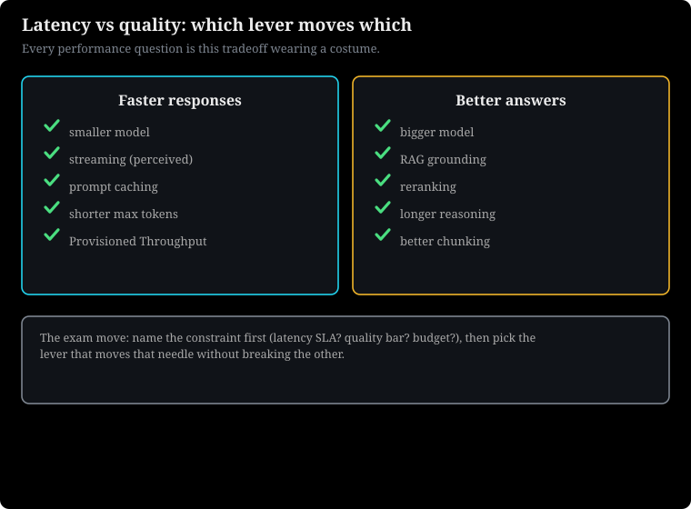
Latency controls (what changes response time).
- Streaming: This reduces perceived latency (time to first token). It does not reduce total time.
- Smaller models: These reduce both time per token and total time. This is the main latency control, with Provisioned Throughput.
- Provisioned Throughput: This removes latency spikes from throttling when there is a load. It guarantees capacity.
- Pre-computation and caching: Semantic cache hits give an answer in milliseconds. There is zero model time.
- Parallel calls: Independent retrievals and model calls run at the same time. The total time is the maximum time, not the sum.
- Prompt compression and context pruning: Fewer input tokens mean less prefill time.
Quality controls (what changes answer quality).
- Retrieval quality (chunking, embeddings, reranking): This is the main control for RAG. Bad input gives bad output.
- Model size: Bigger models reason better. The cascade trades this on purpose.
- Temperature, top-p, top-k: Use low temperature (near 0) for factual tasks. Use higher temperature for creative tasks. These control randomness. They do not control cost.
- Prompt versioning and eval gates: See chapter 7. Quality decreases silently if you do not measure it.
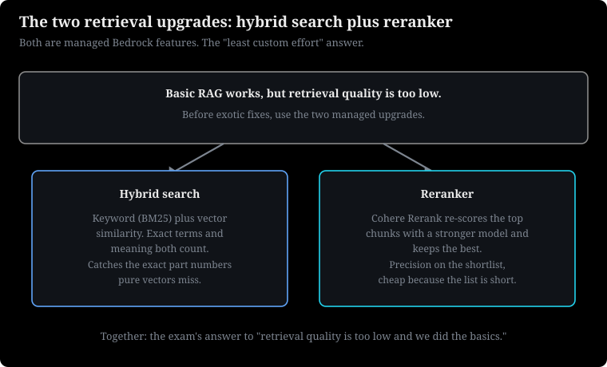
How to read this diagram
- Step one: hybrid search. Keyword and vector search run together.
- Step two: merge the results.
- Step three: the reranker re-scores the top chunks with a stronger model.
Common misunderstanding.
Temperature, top-p, and top-k do not control cost. They change randomness and quality. The exam offers them as wrong answers for cost and consistency. The correct answer for consistency is temperature 0 plus prompt control. The correct answer for consistency is caching plus PT. Keep the three types separate: cost controls, latency controls, quality controls.
"Sub-3-second latency with 10x Friday spikes" needs three controls. PT controls the baseline. On-demand overflow controls spikes. Streaming controls perceived latency. An option with only one control is wrong. Learn to count the limits in the question.
Check one control for each limit.
Trap, stated plainly.
Do not buy Provisioned Throughput to save cost on spiky traffic. PT is an hourly commitment. You pay for it even if you do not use it. So, it increases the bill on bursty traffic. It looks like an optimization. Do not use temperature or top-p as cost controls.
They change randomness. They never change the invoice.
Next: Chapter 7 builds the evaluation loop. This loop proves quality did not decrease when you used a cost control.
7. Eval loop design
Why this chapter comes next. Chapter 6 taught you to spend less. It taught you to do this without hurting quality. But you must prove "without hurting quality". Do not assume it. This chapter builds the evaluation loop.
This loop measures quality before and after every change.
You cannot improve what you do not measure. The exam knows this. Evaluation questions punish people. These people debug GenAI like normal software.
7.1 The evaluation methods
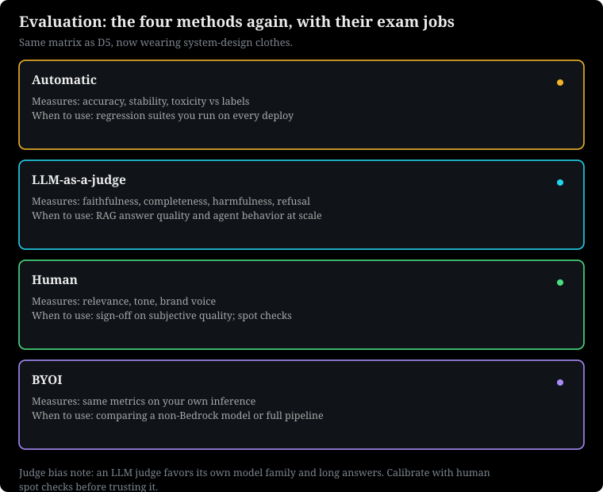
Why this chapter comes next. There are four ways to score outputs. The next question is which metric fits which task.
There are four ways to score model outputs. Each way has a different cost. Each way has a different trust level.
| Method | Metrics | When to use it |
|---|---|---|
| Programmatic (automatic) | Accuracy, toxicity scores, stability. Use built-in or custom datasets. | These are objective, repeatable benchmarks. They are fast and cheap. But they do not see style and nuance. |
| LLM-as-a-judge | Correctness, completeness, faithfulness (hallucination), harmfulness, refusal behavior, style and tone. You can define custom metrics. | This is human-like quality judgment at scale. It is the main method for RAG evaluation. It checks retrieval relevance plus generation faithfulness. It is the main method for agent evaluation. It checks task completion, tool-use effectiveness, reasoning quality. |
| Human evaluation | Relevance, style, brand voice, any custom metric. | This is subjective judgment. Use your own team. Or use an AWS-managed evaluation team. This is expensive. So, use it for spot checks. Use it for brand-voice sign-off. |
| Bring-your-own-inference (BYOI) | Same as above, any model. | Evaluate non-Bedrock models. Evaluate full application responses end to end. |
Trap set.
Programmatic evaluation for style or brand voice is wrong. These are subjective. They need human evaluation or LLM-as-judge. Human evaluation as the only evaluation for large-scale regression is wrong. This costs too much money and time. The exam wants automated gates with human spot checks.
A bigger model is not a fairness fix. Fairness needs metrics. Fairness needs A/B testing. Fairness needs LLM-as-judge, continuously.
7.2 Metrics for each task type
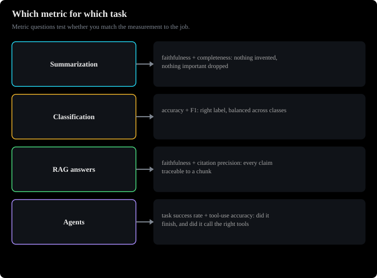
Why this chapter comes next. Metrics relate to tasks. Bedrock automates metrics at scale. Bedrock uses LLM-as-a-judge. This is the setup.
| Task type | Primary metrics | Best method |
|---|---|---|
| Summarization | Be faithful. Do not invent facts. Be complete. Do not drop important information. Be concise. | The LLM acts as a judge. A human checks the tone. |
| RAG question answering | Check retrieval relevance. Are the chunks correct? Check generation faithfulness. Do the chunks support the answer? Check citation accuracy. | The LLM acts as a judge. The judge uses the retrieved context. |
| Classification / extraction | Check accuracy, precision, and recall against labeled data. | Programmatic: exact, repeatable, cheap. |
| Agents and multi-step tasks | Complete the task. Use the correct tool. Use the correct parameters. Make good decisions. Complete the steps. | Use an LLM as a judge on traces. Also, use programmatic checks on tool calls. |
| Creative / brand voice | Match the style, tone, and brand compliance. | A human evaluates. An LLM acts as a judge. The LLM uses a carefully written rubric. |
| Safety | Refusal correctness. Toxicity. PII leakage. Jailbreak resistance. | Use programmatic red-team suites and LLM as judge. |
7.3 LLM-as-a-judge setup on Bedrock
Why this chapter comes next. The judge runs. The last step is to make the judge a gate. The gate blocks deploys when scores regress.
Bedrock model evaluations use judge models. The judge models score your outputs. You provide a dataset. The dataset has prompts and optional reference answers. This is the golden dataset. You select built-in metrics.
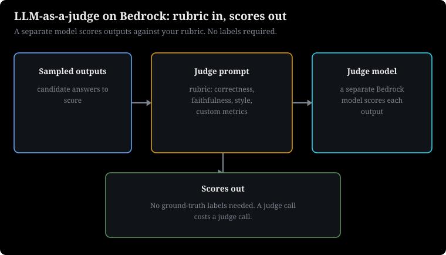
How to read this diagram
- Left: sample outputs from the model under test.
- Middle: the rubric prompt. It tells the judge how to score.
- Right: the judge model. It returns scores, not text.
Or, you define custom metrics in plain language. Bedrock runs the evaluation. It is a managed job.
How to set up the item well.
- Build the golden dataset first. Make a few hundred representative prompts. Make sure the prompts have known good answers. Store the answers in S3. This dataset is the base for every gate below. You have no regression signal without this dataset.
- Separate the judge from the contestant. Do not judge a model with itself when the stakes are high. Use a strong independent judge model. Document the judge model. This makes results comparable across runs.
- Give the judge the rubric and the context. For RAG evaluation, the judge must see the retrieved chunks. This helps the judge score faithfulness. For agents, the judge must see the trace. This helps the judge score tool use. A judge without context makes its own standards.
- Calibrate against humans. Run the judge and a human panel on the same sample. Measure their agreement. If they disagree often, fix the rubric. Do not fix the model.
Concrete numbers (illustrative). A 500-prompt golden set costs about $10 per gate run. The math uses $0.02 per judgment. This cost is low enough to run on every prompt change. Gates work only if they are cheap enough to use every time.
Common misunderstanding.
"LLM judges are objective." This is not true. They have biases. They prefer longer answers. They prefer their own model family. They prefer a confident tone. Calibration and a written rubric make them trustworthy.
Automation does not make them trustworthy.

7.4 Eval gates in CI/CD

A quality checkpoint stops deployment if scores decrease. The pipeline works like this: Every prompt change, model change, or KB re-sync starts the evaluation job. The job runs against the golden dataset. Scores must pass thresholds. Then the new version can ship.
Developer changes prompt / model / KB content
|
v
[Gate 1: programmatic regression] accuracy, toxicity, latency on golden set
| fail -> block, notify
v
[Gate 2: LLM-as-judge] faithfulness, completeness, style vs previous version
| fail -> block, notify
v
[Gate 3: canary] 5% of live traffic, compare metrics to baseline
| regression -> automatic rollback
v
[Gate 4: human spot check] sample of canary outputs, brand voice sign-off
|
v
Full rollout. Continuous monitoring after deploy: hallucination rate on
golden probes, semantic drift checks, bias drift alerts (chapter 8).
How to read this diagram
- Gate 1 is cheap and fast: Programmatic checks run in minutes. They run on every change. They find crashes, format breaks, and toxicity spikes. Nothing subjective passes here. You cannot measure subjective things here.
- Gate 2 is the quality comparison: The judge scores the new version. The judge scores the old version. The judge uses the same dataset. You look for decreases in quality. You do not look for absolute scores. A new prompt scores 2 points lower on faithfulness. Do not ship this prompt. This is true even if the prompt is still "good."
- Gate 3 is the real world: Canary traffic is a small live slice. It tests a release. It shows what the golden set missed. This includes new phrasing, edge users, and load effects. Automatic rollback on quality decrease is the goal. A canary you must watch manually is not useful.
- Gate 4 is the human backstop: This gate uses a small sample. It requires high judgment. Brand voice and subtle tone issues are found here.
- After deploy: Use continuous probes. Run hallucination detection on a schedule. Use golden datasets for this. Use output diffing for consistency. Use reasoning-path tracing for agents. Quality is a time series. It is not a one-time check.
The monitoring stack, mapped.
You can detect hallucinations in near-real-time. You can detect abnormal token spend. This needs minimal custom work. Use Bedrock evaluation jobs. Use LLM-based judgments for hallucinations. Use CloudWatch anomaly detection on token metrics.
Building Glue and Athena pipelines for this costs too much. SageMaker Model Monitor is the wrong tool. It is for tabular ML drift. It is not for GenAI text quality. CloudTrail is for audit. It is not for metrics.
CloudWatch is the metrics answer.
"Compare two models for summarization quality including brand voice" means use LLM-as-judge for scale. Use human evaluation for brand voice. "Validate a new prompt version before rollout" means use regression testing. Also use canary testing. The exam always pairs the subjective metric with the human method.
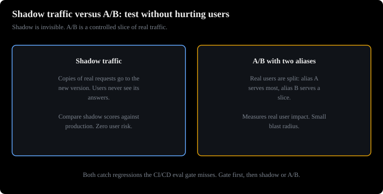
How to read this diagram
- Left: shadow. The new version sees real traffic but no user sees it.
- Right: A/B. Two aliases split real users.
- Bottom: compare, then promote the winner.
Next: Chapter 8 hardens the measured system. It covers IAM, encryption, audit, guardrails, and PII redaction.
8. Security hardening for a production GenAI app
Why this chapter comes next. A fast, cheap, well-measured system is not ready for production. It must be safe. This chapter hardens the system. It covers IAM least privilege, encryption, audit trails, guardrail layering, and PII redaction.
One in five exam questions is about this topic. Candidates who are not ready fail here. Remember defense in depth. No single layer is the full answer.
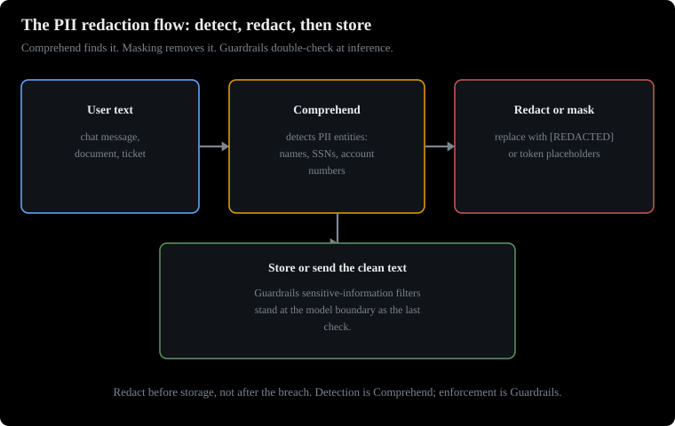
How to read this diagram
- Step one: Comprehend finds the PII entities.
- Step two: the pipeline redacts or masks them.
- Step three: Guardrails filter at the model boundary as a backstop.

How to read this diagram
- Read top to bottom as a request's journey. Every request passes through every layer. It passes in order. A missing layer is a gap. An attacker can use this gap. It is not an optimization.
- WAF and authentication are the perimeter: They decide who can talk to the application. Everything below assumes an authenticated caller. It does not assume a trusted caller.
- Prompt filter and model guardrails are the AI-specific layers: The prompt filter (Comprehend pre-filter, input sanitization) finds injection and PII before the model. Guardrails enforce content policy for input and output.
- Output filter is the last content checkpoint: A Lambda post-processing step can redact, reformat, or block the response. This happens before the response reaches the user. It finds what the model-level guardrails did not find.
- VPC private network is the foundation: Bedrock traffic stays on the private backbone with VPC endpoints. Prompts and documents do not go on the public internet.
- What the diagram implies but does not draw: Audit logging runs with every layer. CloudTrail logs API calls. Invocation logs record model traffic. Encryption wraps all of it. KMS encrypts data at rest. TLS encrypts data in transit.
8.1 IAM least privilege
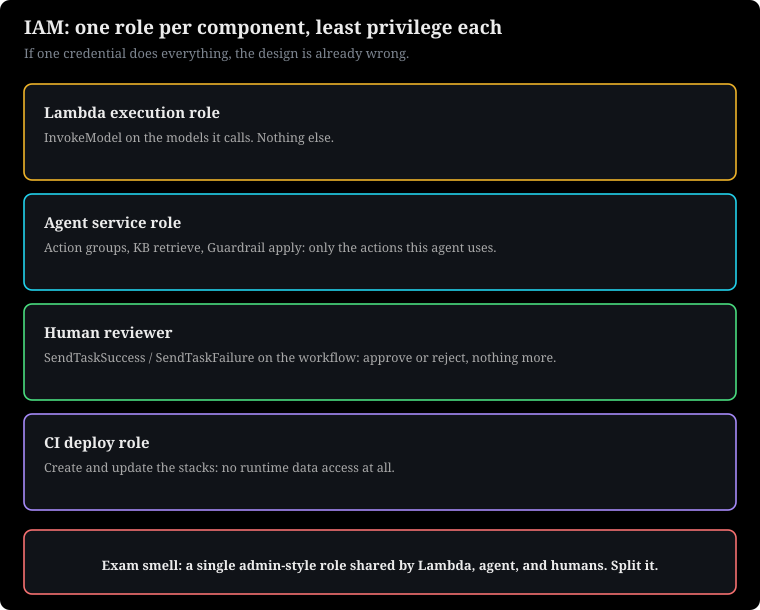
Why this chapter comes next. Permissions are for each component. Now, consider the data itself. This includes encryption at rest and private network paths.
Each component gets only the permissions it needs. It gets no more permissions. Permissions are for specific resources. The router Lambda can invoke specific model ARNs. It cannot invoke bedrock:*. The agent's role can read specific knowledge bases.
It can invoke specific action-group Lambdas. The action-group Lambda's resource-based policy allows invocation only from the agent.
Concrete shape. Use one IAM role for each component. This includes the router Lambda, agent, action-group Lambda, and eval job. Each role has resource-level ARNs. For multi-tenant systems, use separate KBs for each tenant. Use IAM boundaries.
Do not use one shared KB with prompt instructions. For enterprise-wide model access, use a central GenAI gateway. This gives each team one audited path. It avoids direct Bedrock calls from everywhere.
Common misunderstanding.
"The model's built-in safety is enough." This is never the most correct answer for a sensitive audience. The exam expects layered controls. Use guardrails, IAM, network, evaluation, and human review. Match these to the risk.
8.2 KMS and VPC endpoints
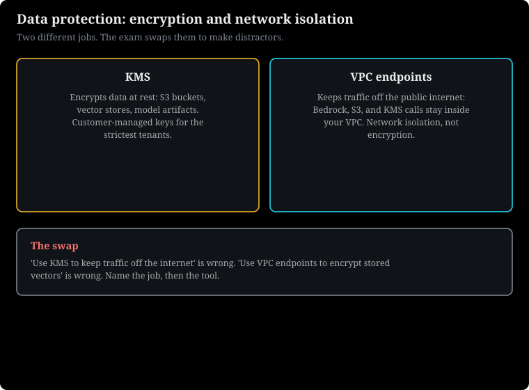
Why this chapter comes next. The service encrypts data. Data stays off the public internet. The next layer records who did what. This is audit.
KMS. KMS encrypts all data at rest that the system uses. This includes S3 document buckets, DynamoDB session tables, EBS volumes, and model invocation logs. Use customer-managed keys for compliance workloads. This lets you control key rotation and access. TLS is the default for all AWS API calls in transit.
VPC endpoints (PrivateLink). Interface endpoints for the Bedrock planes keep traffic off the public internet. These are com.amazonaws.<region>.bedrock (control plane), bedrock-runtime (invocations), bedrock-agent and bedrock-agent-runtime (agents). With endpoints, Lambda functions in private subnets reach Bedrock. They do not need a NAT gateway. They do not need an internet path.
"Keep Bedrock traffic private" is always the VPC endpoint answer.
8.3 CloudTrail and audit
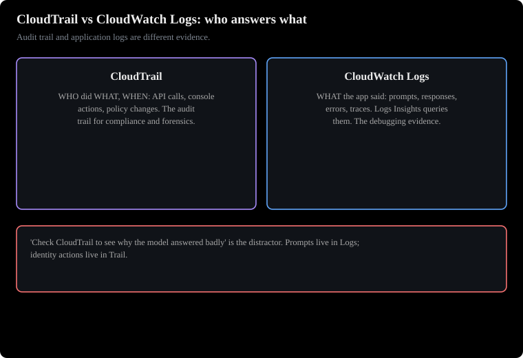
Why this chapter comes next. You covered the audit trail. Now, consider the model boundary itself. This is Guardrails layering.
The split the exam tests. CloudTrail records who called which API. It records when and from where. This is the audit trail. CloudWatch Logs holds application and decision content. It shows what the prompt said.
It shows what the model answered. Trail is for compliance. For example, "who accessed the KB last Tuesday." Logs is for debugging. For example, "why did the agent choose that tool." Know which question each answers.
Model invocation logging. Bedrock can log full requests and responses to S3 or CloudWatch for forensics. These logs can contain PII in compliance environments. Encrypt them with KMS. Or, disable logging. Rely on metadata-only records.
Logging unencrypted invocations to CloudWatch in a healthcare scenario is an exam trap. The correct answer adds KMS or disables it.
Lineage. A regulator asks "which data produced this answer." The answer uses Glue Data Catalog registration. It uses metadata tags on documents. It uses source citations from RetrieveAndGenerate. It uses the CloudTrail audit trail. No single one is enough.
Concrete numbers (illustrative). CloudTrail records every Bedrock API call. It records the caller identity, timestamp, and source IP. A mid-size chatbot fleet can make tens of thousands of management events each day. Size trail storage and retention to your compliance window. Remember that Trails answer "who called what." They do not answer "how fast" or "how good."
8.4 Guardrails layering
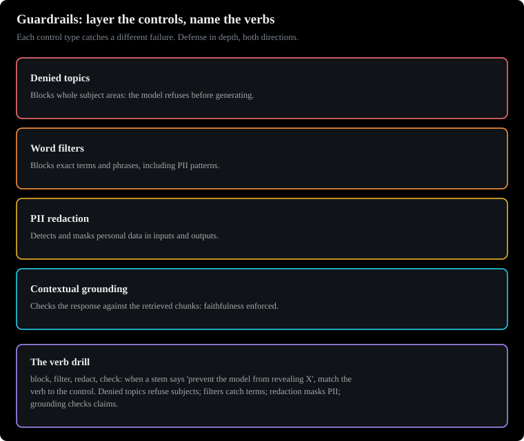
Why this chapter comes next. Guardrails filter at inference. One data class needs its own end-to-end pipeline. This is PII.
The control matrix (memorize).
| Control | What it does | Configured by |
|---|---|---|
| Content filters | Hate, insults, sexual content, violence, misconduct, prompt attacks. | Severity threshold for each category: NONE, LOW, MEDIUM, HIGH. |
| Denied topics | Block subject areas. For example, block medical diagnosis, block investment advice. | Natural-language topic definitions |
| Word filters | Exact-match blocklists | Custom word lists |
| Sensitive information filters | PII detection for more than 30 entity types. Also, use custom regex. | Block or mask for each entity type. |
| Contextual grounding check | Does the source content support the answer? | Threshold. This is the RAG hallucination check. |
| Automated Reasoning check | Does the output break a formal policy? | Natural-language policy rules. Deterministic verification. |
The layering pattern. First, use Comprehend pre-filter on the input. Then, use Guardrails on the model call. Use Guardrails on inputs, outputs, or both. Then, use a Lambda post-processing step. Then, use API Gateway response filtering.
Each layer finds a different type of failure. The exam scenario is about a children's tutor. The scenario needs to block profanity in. It needs to prevent harm out. It needs to stop jailbreaks. It needs to ground facts.
This full stack solves the scenario.
The exam's favorite confusion set. The exam drills this.
"Prevent the model from discussing medical diagnoses" is about denied topics. It is not about content filters. "Redact SSNs" is about sensitive information filters. It is not about word filters. Word filters match exact strings. PII needs entity detection with block or mask.
"Is this answer supported by the retrieved doc" is about contextual grounding. "Does this comply with the written policy" is about Automated Reasoning. Match the control to the scenario verb.
8.5 PII redaction flow.
This is an end-to-end pipeline. It finds personal data at rest. It catches personal data in flight. It blocks personal data at inference.
At rest (S3 document lake):
Amazon Macie scans buckets, finds PII at scale, labels findings
|
In flight (application path):
Amazon Comprehend detects PII entities in real time (30+ types),
Lambda redacts or masks before the text reaches the model
|
At inference (model boundary):
Bedrock Guardrails sensitive-information filters block or mask
PII on inputs and outputs
|
After (retention):
S3 Lifecycle policies expire raw logs and transcripts on schedule;
invocation logs KMS-encrypted or disabled in regulated workloads
How to read this diagram.
- Macie works at rest and at scale: It scans S3 buckets. It reports where PII is. It does not sit in the request path. A scenario about "find PII across 10,000 documents in S3" uses Macie.
- Comprehend works in flight: It does real-time entity detection on text. The text passes through your pipeline. A scenario about "redact PII from chat messages before they reach the model" uses Comprehend plus a Lambda.
- Guardrails work at the model boundary: Block or mask for each entity type on inputs and outputs. This is the last automated checkpoint. It is before the model sees text. It is before the user sees the answer.
- Lifecycle and logging close the loop: PII that you do not keep cannot leak. Expire transcripts on schedule. Treat invocation logs as PII-bearing. Do this unless you prove they are not PII-bearing.
"Protect PII in customer-service GenAI conversations with minimal custom work" is a select-three question. The answers are Macie, Comprehend, Guardrails. The distractors use Translate. Translate keeps meaning. It gives zero protection. The distractors use Rekognition.
Rekognition is a vision service. Comprehend is the text answer. Count the planes: at rest, in flight, at inference. Use one service per plane.
Next: Chapter 9 compresses everything into three decision ladders. These ladders are for mechanical scenario solving.
9. Decision ladders
Why this chapter comes next. You have the full toolkit. This chapter compresses the toolkit into three ladders. The ladders are grounding, pricing, and safety. These ladders turn any scenario into a mechanical climb. Start from the cheapest rung that meets the constraints.
The exam has three main ladders. For all three, start with the cheapest option. This option must meet the requirements. You must explain why you stop at that option.
Each ladder is a list of options. The options go from cheapest to most expensive. There is one ladder for each decision. The grounding ladder shows how to ground the model. The pricing ladder shows how to pay for inference. The safety ladder shows how to keep the system safe.
Exam scenarios give you requirements. They do not give you answers. The ladders help you choose an approach. Start at the top. Go down until you meet all requirements. Then stop.
Section 9.4 shows all three ladders at the same time.
9.1 Grounding ladder: prompt engineering to RAG to agents to fine-tuning
This chapter is next because: Grounding uses a ladder. The second ladder sets the price for the inference that supports it.
Cheapest, fastest
|
| 1. PROMPT ENGINEERING
| New format, tone, few-shot examples, chain-of-thought.
| Stop here when: no new knowledge is needed.
|
| 2. RAG / KNOWLEDGE BASES
| The model needs facts it was not trained on, or citations.
| Retrieval, not retraining. Handles changing documents.
| Stop here when: knowledge updates over time or must be cited.
|
| 3. BEDROCK AGENTS / AGENTIC
| The task needs actions: API calls, database queries,
| multi-step tool use, session memory across turns.
| Stop here when: the job is doing things, not just answering.
|
| 4. FINE-TUNING (SFT, continued pre-training, distillation)
| A new BEHAVIOR baked into the weights: consistent brand voice
| at scale, domain classification, a smaller model matching a
| larger one on a narrow task. Needs labeled data in S3 and
| usually Provisioned Throughput to serve.
| Stop here when: the same task repeats millions of times and
| per-token cost or baked-in behavior is the problem.
|
v
Most expensive, slowest
How to read this diagram
- Go up in order. Stop at the first option that works. Each option costs about ten times more time and money than the option before it. The main skill for the exam is to stop early.
- The exam tests the difference between option 2 and option 4 most often. Use RAG if documents update every three months. Use RAG if you must show sources. Use distillation to a smaller model if the system repeats the same task millions of times. Use distillation if cost is the problem. Stay at option 1 if you only need a different tone.
- Option 3 is for actions, not for knowledge. If the scenario verbs are "look up," "book," "update," or "notify," use option 3. If the verbs are "answer from our documents," use option 2.
- Fine-tuning needs data and serving. You need labeled data in S3. You need a customization job. You usually need Provisioned Throughput to serve the custom model. A scenario that does not mention these items but asks for fine-tuning is a trap.
9.2 Inference pricing ladder
This chapter is next because: Pricing uses a ladder. The third ladder keeps the whole system safe.
On-demand
Spiky, experimental, unpredictable workloads. Pay per token, no commit.
|
Prompt caching
Repeated large static prefixes (system prompts, few-shot, long docs).
Cheaper input tokens. Needs minimum token thresholds, short TTL.
|
Batch inference
Non-interactive, hours-scale latency OK. About 50% cheaper. S3 in/out.
|
Provisioned Throughput
Predictable steady baseline, latency guarantees, throttling protection.
Hourly commit, 1-6 month terms. Invoke the provisioned model ARN.
|
Smaller model / model cascade
Route simple queries to Haiku or Nova Lite, complex to Sonnet or Opus.
A classifier or prompt router decides per query.
Hybrid (the exam's favorite "most correct"):
PT for the predictable baseline + on-demand for the peaks.
How to read this diagram
- Each option handles a different cost type. On-demand handles changes. Caching handles repetition. Batch handles delays. PT handles predictability. Smaller models handle mixed difficulty. Match the option to the traffic type. Do not match it only to the budget.
- PT is a tool for latency and throughput. It also costs money. The exam often shows PT as a way to save money for traffic spikes. This is wrong. PT saves money only when compared to throttled, over-provisioned on-demand. This is true when utilization is steady and high.
- The hybrid answer exists because real traffic has two shapes. There is a flat baseline. There are also spiky peaks. One method cannot serve both cheaply. If the scenario mentions both a baseline and spikes, the answer is almost always hybrid.
9.3 Safety control ladder
This chapter is next because: Three ladders are now defined. Here is one scenario. It uses all three ladders at the same time.
1. Prompt design
System prompts, grounding instructions ("answer only from context"),
output format constraints. Cheapest, always on.
2. Guardrails
Content filters, denied topics, word filters, PII filters,
contextual grounding, Automated Reasoning. On inputs, outputs, or both.
Via Converse guardrailConfig or standalone ApplyGuardrail.
3. IAM and network
Least-privilege roles, VPC endpoints, KMS, resource policies.
Controls who and what can reach the model and the data.
4. Evaluation
Continuous bias drift monitoring, hallucination probes on golden
datasets, LLM-as-judge safety metrics, alerting and remediation.
5. Human review
Step Functions approvals, human eval panels, manual sign-off.
Reserved for high-risk actions and sensitive audiences.
How to read this diagram
- Higher options do not replace lower options. A guardrail does not make a missing system prompt acceptable. Human review does not make missing guardrails acceptable. The exam's scenarios for sensitive audiences always need multiple options. These audiences include children, healthcare, and finance.
- Option 2 has six different controls. Match the verb. "Discussing" a subject means denied topics. "Toxic" content means content filters. "Exact strings" means word filters. "SSNs and names" means sensitive information filters. "Supported by the source" means contextual grounding. "Violates the written policy" means Automated Reasoning.
- Option 5 is the most costly. The exam uses it carefully. Human review appears in answers only when the risk is high. This includes money movement, actions that cannot be undone, and vulnerable users. For normal questions and answers, options 1 to 4 are enough.
9.4 One scenario, all three ladders

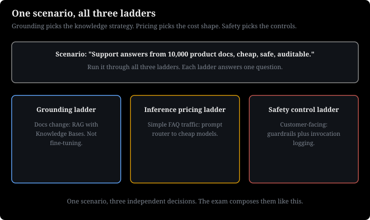
How to read this diagram
- Ladder one: grounding. How does the answer stay factual?
- Ladder two: pricing. What does the inference cost?
- Ladder three: safety. What controls guard the actions?
Scenario. A bank needs a customer-service copilot. The copilot must answer from 40,000 policy documents. The bank updates these documents each month. The copilot must handle balance inquiries. It must also handle card replacements.
These use live core-banking APIs. The copilot must block financial advice. It must redact account numbers. The cost must be less than the current call-center cost. The copilot must get human approval. This approval is for any fee reversal over $500.
Walk the ladders.
- Grounding: Monthly document updates and citation needs mean Q and A is at rung 2 (Knowledge Bases). Balance inquiries and card replacements are actions. So, use rung 3 (Bedrock Agent with action groups). Do not fine-tune. Nothing here needs baked-in behavior.
- Pricing: Support traffic is spiky. So, on-demand is the base. The policy context repeats for each call. So, prompt caching applies. Fee-reversal reports run each night. So, batch inference covers these. Do not use Provisioned Throughput unless a steady baseline with a Service Level Agreement appears. A cascade sends simple FAQs to the small model.
- Safety: Use rung 1 grounding instructions. Use rung 2 guardrails. These include a denied topic for "personalized financial advice." They also include a PII filter to mask account numbers. They include contextual grounding on RAG answers. Use rung 3 IAM scoping. This scopes the agent to read-only banking APIs. It also scopes VPC endpoints. Use rung 4 continuous evaluation on golden probes. Use rung 5 Step Functions approval. This is for fee reversals over $500.
This exercise is important.
The exam writes its hardest questions this way. It gives one scenario and five constraints. Each constraint maps to one rung on one ladder. Extract the constraints. Climb each ladder to the cheapest rung that satisfies the constraint. Check that each distractor violates only one constraint.
That procedure answers most of the exam's scenario questions.
Common misunderstanding.
"Fine-tuning fixes stale knowledge." Fine-tuning bakes knowledge into weights. These weights become stale when the next document updates. RAG keeps knowledge fresh. Retrieval happens when you ask a question. "Prompt caching and Provisioned Throughput are interchangeable cost tools." Caching reduces the cost of repeated input. Provisioned Throughput buys latency and throughput guarantees.
"One guardrail replaces the safety stack." Guardrails are one rung. Sensitive scenarios need the full ladder. The exam always checks that you layered.
The exam's hardest questions give you one scenario. They give five constraints. They ask for the single best design. The procedure is: extract each constraint. Climb each ladder to the cheapest rung that satisfies the constraint. Eliminate every option that violates only one constraint.
If two options remain, choose the more managed option. Choose the more serverless option.
Next: Chapter 10 drills all of it. It has 24 scenario questions in the exam's style.
10. Question bank
Why this chapter comes next. The theory is complete. This chapter has 24 scenario questions. They are in the exam's "most correct answer" style. There is roughly one question per design chapter. This drills the ladders under pressure.
There are 24 scenario questions. They are in the exam's "most correct answer" style. There are 8 easy questions, 8 medium questions, and 8 hard multiple-response questions. Every answer explains the correct choice. It also eliminates each distractor.
Chapter 3: RAG on Bedrock Knowledge Bases

A. Fine-tune a foundation model on the manuals each quarter.
B. Create a Bedrock Knowledge Base with an S3 data source. Use a quarterly sync schedule. Use RetrieveAndGenerate.
C. Paste the manuals into the system prompt of every chat call.
D. Build a custom vector database on EC2. Use a self-managed embedding pipeline.
Correct: B. The Knowledge Base handles ingestion, chunking, embedding, and retrieval. It is a managed service. The sync schedule handles quarterly updates. RetrieveAndGenerate returns citations. A is wrong.
Fine-tuning cannot cite sources. Re-training each quarter is slow and expensive. The knowledge changes. C is wrong. 20,000 manuals do not fit in a prompt. There is no retrieval.
D is wrong. Custom EC2 builds lose to the managed service. This is because of operational overhead. This is the exam's default bias.
A. Switch to a larger generation model.
B. Change the data source chunking strategy to hierarchical. Re-sync the data.
C. Increase the temperature to get more creative answers.
D. Add more few-shot examples to the system prompt.
Correct: B. The failure is structural. Fixed-size chunking split a clause across a boundary. So, no chunk contains the full context. Hierarchical chunking keeps child chunks linked to parent context. This is the exam's preferred fix for structured documents.
A is wrong. The generation model is not the problem. Retrieval is the problem. C is wrong. Temperature controls randomness, not retrieval structure. Higher temperature makes confident wrongness worse.
D is wrong. Few-shot examples do not repair broken chunks.
A. One shared Knowledge Base has prompt instructions. The model must answer only about the caller's brand.
B. Each brand has one Knowledge Base. IAM policies give each team access to its own Knowledge Base.
C. One Knowledge Base has metadata filters for the brand. IAM enforces access limits for each tenant.
D. Store the documents in DynamoDB. Filter them in the application code.
Correct: B and C. B gives full isolation. Separate KBs with IAM scoping is the standard multi-tenant answer for the exam. C is also valid. Metadata filters limit retrieval per brand. IAM enforcement is also used.
A is wrong. Prompt instructions are not a security boundary. The model can leak other brands' data. D is wrong. DynamoDB is not a vector store. It cannot do similarity retrieval.
Chapter 4: Bedrock Agents
A. The foundation model is too small to use tools.
B. You did not run prepare-agent again after the configuration change.
C. The agent needs a larger context window.
D. The app reused the sessionId for different users.
Correct: B. Configuration changes work only after prepare-agent compiles them. The agent runs the old version until then. This is the main agent bug on the exam. A is wrong. Tool use is a schema-driven capability.
It is not a size limit. C is wrong. The context window does not affect a new tool that is not visible. D is wrong. Session reuse causes cross-talk. It does not cause missing tools.
A. One Lambda function runs the whole workflow. This includes waiting for the manager.
B. Use a Bedrock Agent with action groups for validation, coverage, and payout calculation. Use a Step Functions workflow with a task token for the approval step.
C. Use a single long prompt. This prompt tells the model to handle everything, including approvals.
D. Use an SQS queue with a 15-minute delayed message for the approval.
Correct: B. Action groups give the agent its tools. Step Functions with a task token can wait days for human approval. It has timeouts, retries, and an audit history. A is wrong. Lambda stops at 15 minutes.
It cannot wait two days. C is wrong. A prompt cannot enforce a real approval gate. It cannot wait for a human. D is wrong. SQS delay maximum is much less than two days.
It does not provide approval functions.
A. Use the Bedrock Agents supervisor/collaborator pattern. Use prepared and aliased collaborator agents.
B. Configure action groups between the agents. They can call each other as tools.
C. Use DynamoDB for weeks-long conversation memory.
D. Use Amazon Lex as the orchestration layer between agents.
Correct: A and C. A is the built-in multi-agent mechanism. The supervisor delegates to prepared, aliased collaborators. It relays conversation history. C is correct because agent sessions are minutes-scale. Weeks-long memory needs DynamoDB.
B is wrong. Action groups connect agents to tools. They do not connect agents to agents. The exam explicitly rejects this. D is wrong. Lex is a conversational UI service.
It is not an autonomous multi-agent orchestrator.
Chapter 2: Sync versus async invocation
A. Make Converse API calls in a loop from Lambda.
B. Use InvokeModel for embeddings. Batch the embeddings through batch inference with S3 input and output.
C. Use Provisioned Throughput with the maximum model units.
D. Use ConverseStream with prompt caching.
Correct: B. Embeddings need InvokeModel. Converse is only for text generation. Batch inference is about 50 percent cheaper for bulk work that is not interactive. A is wrong: Converse cannot make embeddings. C is wrong: PT gives latency guarantees for steady traffic.
PT does not give bulk cost savings. D is wrong: Streaming does not apply to bulk embedding. Caching does not help unique inputs.
A. Buy more provisioned model units.
B. Change the code. Invoke the provisioned model ARN instead of the base model ID.
C. Add exponential backoff retries to the existing calls.
D. Change from InvokeModel to the Converse API.
Correct: B. PT capacity is only in use when you invoke the provisioned model identifier. Calling the base model ID routes to on-demand. It throttles there. This routing error is an exam classic. A is wrong: More capacity does not help when the code never routes to it.
C is wrong: Retries do not fix traffic with a wrong route. D is wrong: The API choice is not important to the capacity pool that serves the request.
A. Change to ConverseStream. Users see tokens as the tokens generate.
B. Buy Provisioned Throughput to make output wording stable.
C. Set temperature to 0. Add a deterministic semantic cache for questions that repeat.
D. Increase top-p for more diverse responses.
Correct: A and C. A reduces perceived latency through streaming. There is no quality change. C solves both problems. Temperature 0 reduces wording variance. A semantic cache answers repeated questions in milliseconds.
B is wrong: PT fixes capacity and latency. PT does not fix output randomness. D is wrong: Higher top-p increases diversity. This is the opposite of what the consistency complaint needs.
Chapter 5: Chatbot reference architecture
A. Amazon S3, one object per conversation.
B. Amazon DynamoDB with TTL on session items.
C. Amazon ElastiCache as the primary session store.
D. Local files on the Lambda execution environment.
Correct: B. DynamoDB gives single-digit millisecond reads. TTL expiry is built for this. A is wrong: S3 latency and access patterns are wrong for per-turn session reads. C is wrong: ElastiCache is ephemeral. Failover can lose sessions.
D is wrong: Lambda storage is ephemeral. It is not shared across invocations.
A. CloudFormation parameters change per model. Lambda aliases change per model.
B. AppConfig holds model identifiers. Lambda routes traffic. API Gateway is the stable endpoint.
C. EventBridge rules route to different model endpoints. Step Functions route to different model endpoints.
D. Model IDs are hardcoded. Blue/green Lambda deployments are hardcoded.
Correct: B. This is the correct group of three services. AppConfig holds runtime configuration. This means you do not deploy to switch. Lambda routes traffic. API Gateway gives a stable front door.
API Gateway also throttles traffic. A is wrong: CloudFormation changes are deployments. C is wrong: EventBridge routes events. EventBridge does not store configuration. D is wrong: Hardcoding forces a deployment for each switch.
A. Use prompt caching with a cachePoint on the static guide prefix.
B. Use Provisioned Throughput for the full traffic volume.
C. Use a semantic cache in DynamoDB for the repeated questions.
D. Raise the temperature to make answers shorter.
Correct: A and C. A directly addresses the repeated 4,000-token prefix. Cached input tokens cost less. C answers the 40 percent repeated questions. This has zero model cost. B is wrong: PT guarantees latency.
It is not a cost solution for this traffic type. Committing to full volume wastes money. D is wrong: Temperature controls randomness. It does not control length or cost.
Chapter 6: Cost, latency, quality
A. Make on-demand Converse calls through the night.
B. Use batch inference with S3 input and output.
C. Reserve Provisioned Throughput for the night window.
D. Use a fleet of EC2 instances. Run an open model on the fleet.
Correct: B. Batch inference is for this exact purpose. It does deferred bulk work. It costs about 50 percent less than on-demand. A is wrong: On-demand pricing for bulk deferred work wastes money. C is wrong: PT commits hourly capacity.
It guarantees latency. No one needs this guarantee here. D is wrong: Self-managed GPU fleets increase operational overhead. This is true unless the scenario needs something Bedrock cannot do.
A. Move everything to the smallest available model.
B. Use prompt caching for the repeated prefix. Use a model cascade. The cascade routes easy queries to a small model. Use prompt compression. Eval gates validate the compression.
C. Buy Provisioned Throughput for all traffic.
D. Disable streaming to reduce token usage.
Correct: B. The exam rule for cost scenarios is multi-lever. Caching addresses the repeated prefix. The cascade addresses mixed difficulty. Compression removes waste. Eval gates prove no quality decrease.
A is wrong: The smallest model for everything can risk quality on hard queries. C is wrong: PT does not save cost for mixed, spiky traffic. D is wrong: Streaming does not change token usage.
A. Size Provisioned Throughput for the steady baseline. Use on-demand overflow for spikes.
B. Provisioned Throughput is 10 times the peak size. It runs all week.
C. ConverseStream. Users see the first token quickly.
D. Do batch inference for the Friday traffic.
Correct: A and C. A is the hybrid pattern. PT guarantees the baseline. On-demand absorbs spikes. It does not pay for idle peak capacity all week. C cuts perceived latency.
B is wrong. Paying for peak capacity 24/7 wastes money. D is wrong. Batch inference has hours of latency. It cannot serve interactive traffic.
Chapter 7: Evaluation loops
A. The program matches reference answers with exact accuracy.
B. The LLM acts as a judge. The judge evaluates the retrieved chunks. The judge measures faithfulness.
C. A human must evaluate every output in production.
D. Compare the models' published benchmark scores.
Correct: B. Faithfulness is a judgment. The judgment needs the retrieved context. An LLM-as-a-judge with context scales. Humans cannot scale in the same way.
A is wrong: An exact match is too rigid for generated answers. It misses paraphrased but faithful responses. C is wrong: Humans cannot score production-scale volume. Reserve humans for spot checks. D is wrong: Published benchmarks ignore your documents. They also ignore your constraints.
A. Make a Glue and Athena pipeline. The pipeline scans logs each hour.
B. Bedrock evaluation jobs use LLM-based judgments for hallucinations. CloudWatch anomaly detection uses token metrics.
C. Use SageMaker Model Monitor on the text outputs.
D. Use CloudTrail Insights on the Bedrock API calls.
Correct: B. Bedrock eval jobs detect hallucination. CloudWatch anomaly detection watches spend. A is wrong. Managed services do this work natively. This option has high operational overhead.
C is wrong. Model Monitor is for tabular ML drift. It is not for GenAI text quality. D is wrong. CloudTrail logs audits. It is not a metrics plane.
It is not a quality plane.
A. The system runs an automated regression. The new prompt runs against the versioned golden dataset. The system blocks score drops.
B. Deploy to 100 percent of traffic. Watch support tickets.
C. A human checks a sample for brand voice.
D. Programmatic toxicity scoring is the only quality gate.
Correct: A and C. A gives the automated regression signal on quality metrics. C covers brand voice. Brand voice is subjective. Brand voice needs human judgment. B is wrong.
Full rollout without validation is how regressions reach users. D is wrong. Toxicity scoring alone says nothing about faithfulness. Toxicity scoring alone says nothing about completeness. Toxicity scoring alone says nothing about voice.
Chapter 8: Security hardening
A. A NAT gateway in front of the Lambda functions.
B. VPC interface endpoints (PrivateLink) for the Bedrock, Bedrock runtime, and agent endpoints.
C. WAF rules on the API Gateway.
D. KMS encryption on the DynamoDB table.
Correct: B. Interface endpoints keep Bedrock traffic on the private AWS backbone. There is no internet path. A is wrong: a NAT gateway sends traffic over the public internet. C is wrong: WAF filters web attacks. It does not make network paths private.
D is wrong: KMS encrypts data at rest. It does not change the network path.
A. Rely on the foundation model's built-in safety training.
B. Defense in depth: Comprehend pre-filter on inputs, Bedrock Guardrails on inputs and outputs, contextual grounding checks, and a Lambda post-processing step.
C. A word filter list as the only control.
D. Denied topics blocking all educational content.
Correct: B. Sensitive audiences need layered controls. Use a pre-filter. Use guardrails for both directions. Check grounding against the curriculum. Use a post-processing step.
A is wrong: built-in safety alone is not the most correct answer for a sensitive audience. C is wrong: word filters catch exact strings only. They do not catch jailbreaks or groundedness. D is wrong: blocking educational content stops the application's purpose.
A. Amazon Macie to discover PII in S3 at scale.
B. Amazon Comprehend for real-time PII detection with redaction before model calls.
C. Bedrock Guardrails sensitive-information filters to block or mask PII at inference.
D. Amazon Translate to obfuscate personal data.
E. Amazon Rekognition to scan chat text for PII.
Correct: A, B, and C. Use one service per plane. Use Macie at rest. Use Comprehend in flight. Use Guardrails at the model boundary. This is the exam's canonical PII triple.
D is wrong: translation keeps meaning. It protects nothing. E is wrong: Rekognition is a vision service. Comprehend is the text answer.
Chapter 9: Decision ladders

A. Prompt engineering with a longer system prompt.
B. RAG with Bedrock Knowledge Bases and a monthly sync schedule.
C. Fine-tuning a custom model every month.
D. Training a custom foundation model from scratch.
Correct: B. Changing documents and citation needs is the textbook RAG rung. Retrieval handles updates. RetrieveAndGenerate provides citations. A is wrong: prompts cannot hold 40,000 documents. Prompts cannot stay current.
C is wrong: monthly re-tuning is slow. It cannot cite sources. D is wrong: this is much more expensive. It is out of scope for the exam.
A. Provisioned Throughput with a 6-month commit.
B. On-demand pricing until traffic patterns stabilize.
C. Batch inference for all requests.
D. A 1-year Savings Plan on inference.
Correct: B. The traffic is spiky and experimental. Do not make a commitment. On-demand pricing is correct for this traffic. A is wrong. PT commits hourly spend.
You cannot predict the traffic. C is wrong. Batch latency is many hours. It cannot serve an interactive feature. D is wrong. The scenario does not give a reason for a commitment.
PT-style commits do not work with spiky traffic.
A. Denied topics for personalized investment advice. Sensitive-information filters mask account numbers on inputs and outputs.
B. Content filters at HIGH severity for investment advice. Word filters list every possible account number.
C. Contextual grounding checks for the advice refusal. Automated Reasoning for the masking.
D. Prompt-attack filters for the account numbers. Denied topics for the masking.
Correct: A. This is a select-TWO question. Both correct choices are in option A. Denied topics ban the subject matter. "Investment advice" is a topic. It is not a toxicity category.
Sensitive-information filters mask account numbers in both directions. B is wrong for both parts. Content filters cover toxicity categories. They do not ban topics. Word filters cannot list all account numbers. C swaps the controls.
Grounding checks hallucinations against sources. Automated Reasoning checks policy compliance. Neither refuses topics nor masks PII. D swaps them again. Prompt-attack filters find jailbreaks. They do not find PII.
How to review with this bank.
For each question you missed, write the ladder or matrix it tested. Write the rung where you should have stopped. Most misses happen because you climb one rung too far. (For example, fine-tuning instead of RAG, PT instead of caching). Or you swap two controls with similar names. (For example, denied topics versus content filters, inference profiles versus prompt routers).
Drill the confusion sets. Do not drill the definitions.
This volume covered the designs. The next volume, Hands-On Labs, rebuilds the key patterns. These are working labs. They include Strands agents, Bedrock Flows, multi-agent routing, Lambda front ends, and CI/CD with eval gates. After the labs, the Question Patterns volume drills how AWS asks questions.